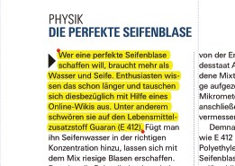
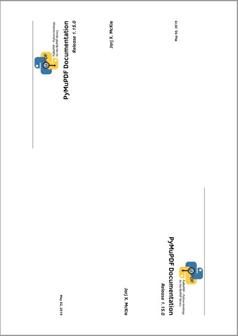

Page#
表示文档页面的类。页面对象由 Document.load_page() 创建，或者等效地通过 doc[n] 进行索引访问——它没有独立的构造函数。
文档和页面之间存在父子关系。如果文档被关闭或删除，所有已存在的页面对象（以及它们的子对象）都将变得不可用（”孤立”）。在这种情况下，任何页面属性或方法的调用都会引发异常。
为了方便使用，许多页面方法都有一个相应的 Document 级别的替代方法。本章节末尾提供了这些方法的概览。
备注
本章节中多次提及 坐标 这一术语。理解坐标系统至关重要，建议先熟悉 坐标 章节，以便更好地掌握相关概念。
Class representing a document page. A page object is created by Document.load_page() or, equivalently, via indexing the document like doc[n] - it has no independent constructor.
There is a parent-child relationship between a document and its pages. If the document is closed or deleted, all page objects (and their respective children, too) in existence will become unusable (“orphaned”): If a page property or method is being used, an exception is raised.
Several page methods have a Document counterpart for convenience. At the end of this chapter you will find a synopsis.
备注
Many times in this chapter we are using the term coordinate. It is of high importance to have at least a basic understanding of what that is and that you feel comfortable with the section 坐标.
更改 Page#
Modifying Pages
仅 PDF 文档支持更改页面属性和修改页面内容。
简而言之，您可以使用 PyMuPDF 执行以下操作：
修改页面旋转角度及其可见部分（”裁剪框”）。
插入图像、其他 PDF 页面、文本和简单的几何对象。
添加注释和表单字段。
备注
许多方法需要使用坐标（点、矩形）来将内容放置在指定位置。请注意，自 v1.17.0 以来，这些坐标 必须始终 以 未旋转 的页面为基准提供。反之亦然：除了 Page.rect 和 Page.bound() （它们会随页面旋转而变化），其他方法和属性返回的所有坐标均基于未旋转页面。
例如，Page.get_image_bbox() 的返回值不会因 Page.set_rotation() 调用而变化。同样，Page.get_text() 返回的坐标、注释矩形等也不会变化。如果要获取对象在 旋转坐标系 中的位置，可以将坐标与 Page.rotation_matrix 相乘。相应地，Page.derotation_matrix 提供了逆变换，可用于与其他可能有不同行为的阅读器交互。
备注
如果您在页面上添加或更新了注释、链接或表单字段，并且 立即 需要处理这些内容（即 未离开页面），请在访问这些新或更新的项目之前，使用 Document.reload_page() 重新加载页面。
通常建议重新加载页面——尽管在所有情况下都不一定是强制性的。然而，与 MuPDF 相比，PyMuPDF 对某些注释和表单控件提供了扩展功能，未来可能还会增加更多扩展。
重新加载页面可确保所有更改已完全应用到 PDF 结构，因此您可以安全地创建 Pixmap，或成功地遍历注释、链接和表单字段。
方法 / 属性 |
简要描述 |
|---|---|
仅限 PDF：添加脱字符（Caret）注释 |
|
仅限 PDF：添加圆形注释 |
|
仅限 PDF：添加文件附件注释 |
|
仅限 PDF：添加自由文本注释 |
|
仅限 PDF：添加高亮注释 |
|
仅限 PDF：添加手写墨迹注释 |
|
仅限 PDF：添加直线注释 |
|
仅限 PDF：添加多边形注释 |
|
仅限 PDF：添加折线注释 |
|
仅限 PDF：添加矩形注释 |
|
仅限 PDF：添加遮蔽（Redaction）注释 |
|
仅限 PDF：添加波浪线注释 |
|
仅限 PDF：添加印章（Stamp）注释 |
|
仅限 PDF：添加删除线（Strikeout）注释 |
|
仅限 PDF：添加文本注释（评论） |
|
仅限 PDF：添加下划线注释 |
|
仅限 PDF：添加表单控件字段 |
|
仅限 PDF：获取页面上所有注释（及控件）名称的列表 |
|
仅限 PDF：获取页面上所有注释（及控件）xref 的列表 |
|
返回页面上所有注释的生成器 |
|
仅限 PDF：处理页面上的遮蔽内容 |
|
获取页面边界矩形 |
|
仅限 PDF：获取矢量图形的边界框 |
|
仅限 PDF：删除指定注释 |
|
仅限 PDF：删除页面上的图像 |
|
仅限 PDF：删除链接 |
|
仅限 PDF：删除表单控件字段 |
|
仅限 PDF：绘制三次贝塞尔曲线 |
|
仅限 PDF：绘制圆 |
|
仅限 PDF：绘制贝塞尔曲线 |
|
仅限 PDF：绘制直线 |
|
仅限 PDF：绘制椭圆 |
|
仅限 PDF：绘制折线 |
|
仅限 PDF：绘制四边形 |
|
仅限 PDF：绘制矩形 |
|
仅限 PDF：绘制扇形 |
|
仅限 PDF：绘制波浪线 |
|
仅限 PDF：绘制锯齿线 |
|
在页面上检测表格 |
|
获取页面上的矢量图形 |
|
仅限 PDF：获取页面中引用的字体列表 |
|
仅限 PDF：获取嵌入图像的边界框和矩阵 |
|
获取页面中所有图像的元信息列表 |
|
仅限 PDF：改进版的 |
|
仅限 PDF：获取页面中引用的图像列表 |
|
仅限 PDF：获取页面标签 |
|
获取页面上所有链接 |
|
以光栅格式创建页面图像 |
|
以 SVG 格式创建页面图像 |
|
提取页面文本 |
|
提取矩形区域内的文本 |
|
使用 OCR 解析页面文本 |
|
解析页面文本 |
|
仅限 PDF：获取页面中引用的 xobjects 列表 |
|
仅限 PDF：在页面上插入字体 |
|
仅限 PDF：插入图像 |
|
仅限 PDF：插入链接 |
|
仅限 PDF：插入文本 |
|
仅限 PDF：在矩形区域内插入 HTML 文本 |
|
仅限 PDF：插入文本框 |
|
返回页面上所有链接的生成器 |
|
仅限 PDF：加载指定注释 |
|
仅限 PDF：加载指定表单控件字段 |
|
返回页面上的第一个链接 |
|
仅限 PDF：创建新的 Shape |
|
仅限 PDF：移除页面旋转（重置为 0） |
|
仅限 PDF：替换页面上的图像 |
|
搜索字符串 |
|
仅限 PDF：修改 |
|
仅限 PDF：修改 |
|
仅限 PDF：修改 |
|
仅限 PDF：修改 |
|
仅限 PDF：设置页面旋转角度 |
|
仅限 PDF：修改 |
|
仅限 PDF：显示 PDF 页面图像 |
|
仅限 PDF：修改链接 |
|
返回页面上所有表单控件字段的生成器 |
|
写入一个或多个 TextWriter 对象 |
|
|
|
页面的 |
|
页面的 |
|
页面的 |
|
页面的 |
|
仅限 PDF：获取未旋转坐标 |
|
页面上的第一个 Annot |
|
页面上的第一个 Link |
|
页面上的第一个表单控件字段 |
|
|
|
页面的 |
|
页码 |
|
所属文档对象 |
|
页面矩形区域 |
|
仅限 PDF：获取旋转坐标 |
|
仅限 PDF：页面旋转角度 |
|
仅限 PDF：转换 PDF 和 MuPDF 坐标 |
|
仅限 PDF：页面的 |
Changing page properties and adding or changing page content is available for PDF documents only.
In a nutshell, this is what you can do with PyMuPDF:
Modify page rotation and the visible part (“cropbox”) of the page.
Insert images, other PDF pages, text and simple geometrical objects.
Add annotations and form fields.
备注
Methods require coordinates (points, rectangles) to put content in desired places. Please be aware that these coordinates must always be provided relative to the unrotated page (since v1.17.0). The reverse is also true: except Page.rect, resp. Page.bound() (both reflect when the page is rotated), all coordinates returned by methods and attributes pertain to the unrotated page.
So the returned value of e.g. Page.get_image_bbox() will not change if you do a Page.set_rotation(). The same is true for coordinates returned by Page.get_text(), annotation rectangles, and so on. If you want to find out, where an object is located in rotated coordinates, multiply the coordinates with Page.rotation_matrix. There also is its inverse, Page.derotation_matrix, which you can use when interfacing with other readers, which may behave differently in this respect.
备注
If you add or update annotations, links or form fields on the page and immediately afterwards need to work with them (i.e. without leaving the page), you should reload the page using Document.reload_page() before referring to these new or updated items.
Reloading the page is generally recommended – although not strictly required in all cases. However, some annotation and widget types have extended features in PyMuPDF compared to MuPDF. More of these extensions may also be added in the future.
Releoading the page ensures all your changes have been fully applied to PDF structures, so you can safely create Pixmaps or successfully iterate over annotations, links and form fields.
Method / Attribute |
Short Description |
|---|---|
PDF only: add a caret annotation |
|
PDF only: add a circle annotation |
|
PDF only: add a file attachment annotation |
|
PDF only: add a text annotation |
|
PDF only: add a “highlight” annotation |
|
PDF only: add an ink annotation |
|
PDF only: add a line annotation |
|
PDF only: add a polygon annotation |
|
PDF only: add a multi-line annotation |
|
PDF only: add a rectangle annotation |
|
PDF only: add a redaction annotation |
|
PDF only: add a “squiggly” annotation |
|
PDF only: add a “rubber stamp” annotation |
|
PDF only: add a “strike-out” annotation |
|
PDF only: add a comment |
|
PDF only: add an “underline” annotation |
|
PDF only: add a PDF Form field |
|
PDF only: a list of annotation (and widget) names |
|
PDF only: a list of annotation (and widget) xrefs |
|
return a generator over the annots on the page |
|
PDF only: process the redactions of the page |
|
rectangle of the page |
|
PDF only: bounding boxes of vector graphics |
|
PDF only: delete an annotation |
|
PDF only: delete an image |
|
PDF only: delete a link |
|
PDF only: delete a widget / field |
|
PDF only: draw a cubic Bezier curve |
|
PDF only: draw a circle |
|
PDF only: draw a special Bezier curve |
|
PDF only: draw a line |
|
PDF only: draw an oval / ellipse |
|
PDF only: connect a point sequence |
|
PDF only: draw a quad |
|
PDF only: draw a rectangle |
|
PDF only: draw a circular sector |
|
PDF only: draw a squiggly line |
|
PDF only: draw a zig-zagged line |
|
locate tables on the page |
|
get vector graphics on page |
|
PDF only: get list of referenced fonts |
|
PDF only: get bbox and matrix of embedded image |
|
get list of meta information for all used images |
|
PDF only: improved version of |
|
PDF only: get list of referenced images |
|
PDF only: return the label of the page |
|
get all links |
|
create a page image in raster format |
|
create a page image in SVG format |
|
extract the page’s text |
|
extract text contained in a rectangle |
|
create a TextPage with OCR for the page |
|
create a TextPage for the page |
|
PDF only: get list of referenced xobjects |
|
PDF only: insert a font for use by the page |
|
PDF only: insert an image |
|
PDF only: insert a link |
|
PDF only: insert text |
|
PDF only: insert html text in a rectangle |
|
PDF only: insert a text box |
|
return a generator of the links on the page |
|
PDF only: load a specific annotation |
|
PDF only: load a specific field |
|
return the first link on a page |
|
PDF only: create a new Shape |
|
PDF only: set page rotation to 0 |
|
PDF only: replace an image |
|
search for a string |
|
PDF only: modify |
|
PDF only: modify |
|
PDF only: modify the |
|
PDF only: modify |
|
PDF only: set page rotation |
|
PDF only: modify |
|
PDF only: display PDF page image |
|
PDF only: modify a link |
|
return a generator over the fields on the page |
|
write one or more TextWriter objects |
|
displacement of the |
|
the page’s |
|
the page’s |
|
the page’s |
|
the page’s |
|
PDF only: get coordinates in unrotated page space |
|
first Annot on the page |
|
first Link on the page |
|
first widget (form field) on the page |
|
bottom-right point of |
|
the page’s |
|
page number |
|
owning document object |
|
rectangle of the page |
|
PDF only: get coordinates in rotated page space |
|
PDF only: page rotation |
|
PDF only: translate between PDF and MuPDF space |
|
PDF only: page |
Class API
- class Page#
- bound()#
确定页面的矩形区域。等同于属性
Page.rect。对于 PDF 文档，该矩形 通常 也与mediabox和cropbox一致，但并非总是如此。例如，如果页面经过旋转，则此方法会反映该变化，而Page.cropbox不会受到影响。- 返回类型:
- add_caret_annot(point)#
仅适用于 PDF：添加一个插入标记图标。插入标记（Caret Annotation）通常用于指示页面上的文本编辑。
- 参数:
point (point_like) – 插入标记图标的左上角位置，该图标位于一个 20 × 20 的矩形内，由 MuPDF 提供。
- 返回类型:
- 返回:
创建的注释对象。描边颜色为蓝色 (0, 0, 1)，不支持填充颜色。

Show/hide history
新增于 v1.16.0
- add_text_annot(point, text, icon='Note')#
仅适用于 PDF：添加评论图标（“便签”），并附带文本。仅图标可见，文本默认隐藏，许多 PDF 查看器可在鼠标悬停或双击图标时显示文本内容。
- 参数:
point (point_like) – 评论图标的左上角位置，该图标位于 20 × 20 的矩形内，由 MuPDF 提供。
text (str) – 评论文本，双击或悬停图标时显示。可包含任意拉丁字符。
icon (str) – 选择用于表示评论的图标，可选值包括： -
"Note"（默认） -"Comment"-"Help"-"Insert"-"Key"-"NewParagraph"-"Paragraph"
（新增于 v1.16.0）
- 返回类型:
- 返回:
创建的注释对象。描边颜色为黄色 (1, 1, 0)，不支持填充颜色。
- add_freetext_annot(rect, text, *, fontsize=11, fontname='helv', text_color=0, fill_color=None, border_width=0, dashes=None, callout=None, line_end=PDF_ANNOT_LE_OPEN_ARROW, opacity=1, align=TEXT_ALIGN_LEFT, rotate=0, richtext=False, style=None)#
仅适用于 PDF：在给定矩形区域内添加文本。可以通过指定两个或三个点状对象来选择性地请求显示“标注”形状（见下文）。
- 参数:
rect (rect_like) – 要插入文本的矩形区域。文本会根据框宽自动换行，超出矩形区域的文本部分将不可见且不提示警告。
text (str) – 文本内容。可以包含任何混合的拉丁字母、希腊字母、 Cyrillic、汉字、日文和韩文字符。如果
richtext=True（见下文），则字符串会被解释为 HTML 语法，这为文本效果提供了更多的选择。fontsize (float) – 字体大小。默认值为 11。如果
richtext=True，则此参数会被忽略。fontname (str) –
字体名称。默认值为 “Helv”。如果
richtext=True，则此参数被忽略；否则，以下字体是可接受的：可接受的字体有 “Helv”（Helvetica），”Cour”（Courier），”TiRo”（Times-Roman），”ZaDb”（ZapfDingBats）和 “Symb”（Symbol）。名称可以缩写为前两个字母，如 “Co” 代表 “Cour”，可使用小写字母。
不支持字体的粗体或斜体变体。
text_color (list,tuple,float) – 文本颜色。默认值为黑色。如果
richtext=True，则此参数被忽略。fill_color (list,tuple,float) – 填充颜色。用于
rect和适用情况下的标注线条的终点。默认值为None。border_color (list,tuple,float) – 该参数仅对
richtext=True有效，否则使用text_color。border_width (float) – 边框和标注线条的宽度。默认值为 0（无边框），在这种情况下，标注线条可能会在不同的 PDF 查看器中显示为细线。
dashes (list,tuple) – 指定边框和标注线条虚线样式的浮动列表。默认值为
None。callout (list,tuple) – 一个包含两个或三个
point_like对象的列表/元组，这些对象会被解释为起点、膝点和终点（按此顺序），将该标注转换为一个标注形状。line_end (int) – 标注线条的终点符号。它会被绘制在
callout列表中的第一个点。默认值为开放箭头。可以参考 注释行尾样式 获取更多可能的值。opacity (float) – 透明度，值为
0 <= opacity < 1，使标注变得透明。默认值为无透明度。align (int) – 文本对齐方式，取值为 TEXT_ALIGN_LEFT、TEXT_ALIGN_CENTER 或 TEXT_ALIGN_RIGHT — 不支持两端对齐。如果
richtext=True，此参数将被忽略。rotate (int) – 文本方向，接受的值为 90° 的整数倍。无效值将会设置为 0。
richtext (bool) – 将
text视为 HTML 语法。允许实现 粗体、斜体、任意文本颜色、字体大小、文本对齐（包括两端对齐）等效果，具体取决于 HTML 和样式指令的支持。类似于Page.insert_htmlbox()中的处理方式。基础库会在遇到不包含在标准字体中的字符时引入所需的字体。如果设置了此选项，一些参数将被忽略，如上所述。默认值为False。style (str) – 提供可选的 CSS 语法的 HTML 样式信息。如果
richtext=False，则此参数被忽略。
- 返回类型:
- 返回:
创建的注释对象。
Show/hide history
在 v1.19.6 中更改：添加边框颜色参数
- add_file_annot(pos, buffer, filename, ufilename=None, desc=None, icon='PushPin')#
仅适用于 PDF：在指定位置添加文件附件标注，并显示 “PushPin” 图标。
- 参数:
pos (point_like) – “PushPin” 图标的左上角位置，该图标位于一个 18x18 的矩形内。
buffer (bytes,bytearray,BytesIO) –
要存储的数据（实际文件内容、任何数据等）。
在 v1.14.13 中更改：现在也支持 io.BytesIO。
filename (str) – 与数据关联的文件名。
ufilename (str) – 文件名的可选 PDF Unicode 版本。默认为文件名。
desc (str) – 文件的可选描述。默认为文件名。
icon (str) – 选择以下图标之一作为附件的可视符号： -
"PushPin"（默认） -"Graph"-"Paperclip"-"Tag"（新增于 v1.16.0）
- 返回类型:
- 返回:
创建的注释对象。描边颜色为黄色 (1, 1, 0)，不支持填充颜色。
- add_ink_annot(list)#
仅适用于 PDF：添加“手绘”涂鸦标注。
- 参数:
list (sequence) – 一个包含一个或多个子列表的列表，每个子列表包含
point_like项。每个子列表中的每个项都被解释为 Point，并通过这些点绘制连接线。不同的子列表代表不同的绘制线条。- 返回类型:
- 返回:
创建的注释，默认外观为黑色 (0, 0, 0)，线条宽度为 1。没有填充颜色支持。
- add_line_annot(p1, p2)#
仅适用于 PDF：添加一条直线标注。
- 参数:
p1 (point_like) – 直线的起始点。
p2 (point_like) – 直线的终点。
- 返回类型:
- 返回:
创建的注释。直线（描边）颜色为红色 = (1, 0, 0)，线条宽度为 1。没有填充颜色支持。 标注矩形 会自动创建，包含两个点，每个点周围有半径为 3 * 线条宽度的圆圈，以便为任何线条结束符号腾出空间。
- add_rect_annot(rect)#
- add_circle_annot(rect)#
仅适用于 PDF：添加矩形或圆形标注。
- 参数:
rect (rect_like) – 绘制矩形或圆形的矩形区域，必须是有限且非空的。如果矩形不是等边的，则绘制椭圆。
- 返回类型:
- 返回:
创建的注释。它以红色 (1, 0, 0) 作为描边颜色，线条宽度为 1，支持填充颜色。
删节/Redactions#
- add_redact_annot(quad, text=None, fontname=None, fontsize=11, align=TEXT_ALIGN_LEFT, fill=(1, 1, 1), text_color=(0, 0, 0), cross_out=True)#
仅适用于 PDF：添加一个编辑标注。编辑标注标识出需要从文档中移除的内容。添加此类标注是两个步骤中的第一个，它会显示出在随后的步骤中将被移除的内容，具体步骤为
Page.apply_redactions()。- 参数:
quad (quad_like,rect_like) – 指定要移除的（矩形）区域，这个区域始终等于标注矩形。它可以是
rect_like或quad_like对象。如果指定了四边形，则取其包围矩形。text (str) – 在应用编辑后（即移除旧内容）要放入矩形中的文本。（新增于 v1.16.12）
fontname (str) –
使用的字体名称，当提供 text 时才有效，否则忽略。此处适用与
Page.insert_textbox()相同的规则 – 即Page.apply_redactions()内部调用的方法。替换文本将 垂直居中，如果使用的是 CJK 或 PDF Base 14 字体 字体。（新增于 v1.16.12）备注
对于页面中的 现有 字体，使用其引用名称作为 fontname （即
Page.get_fonts()中条目的 item[4]）。对于 新字体，非内建字体，操作如下:
page.insert_text(point, # 任意位置，但不在所有编辑矩形内 "something", # 非空字符串 fontname="newname", # 新的、未使用的引用名称 fontfile="...", # 所需的字体文件 render_mode=3, # 使文本不可见 ) page.add_redact_annot(..., fontname="newname")
fontsize (float) – 替换文本的
fontsize。如果文本太大以至于无法适应，会尝试多次插入，逐渐将fontsize减小，最低不低于 4。如果仍然无法适配，则不插入文本。（新增于 v1.16.12）align (int) – 替换文本的水平对齐方式。参见
insert_textbox()以了解可用值。若使用 PDF 内建字体（CJK 或 PDF Base 14 字体），垂直对齐将（大致）居中。（新增于 v1.16.12）fill (sequence) – 编辑后矩形的填充颜色。默认值为 白色 = (1, 1, 1)，如果指定为
None，也会取此值。若完全不希望填充颜色，可指定False。此时矩形保持透明。（新增于 v1.16.12）text_color (sequence) – 替换文本的颜色。默认值为 黑色 = (0, 0, 0)。（新增于 v1.16.12）
cross_out (bool) – 向标注矩形添加两条对角线。（新增于 v1.17.2）
- 返回类型:
- 返回:
创建的标注。其标准外观为一个红色矩形（无填充颜色），可选择显示两条对角线。颜色、线宽、虚线、透明度和混合模式可以像其他标注一样通过
Annot.update()设置和应用。（在 v1.17.2 中更改）
Show/hide history
新增于 v1.16.11
在 v1.16.12 中更改：删除了先前的 mark 参数。现在，每个编辑标注的矩形将被填充各自的 fill 颜色。如果标注中提供了 text，则会调用
insert_textbox()插入替换文本。在 v1.18.0 中更改：增加了处理重叠图片的选项。
在 v1.23.27 中更改：增加了移除图形的选项。
在 v1.24.2 中更改：增加了
keep_text选项，用于保持文本不受影响。
- apply_redactions(images=PDF_REDACT_IMAGE_PIXELS | 2, graphics=PDF_REDACT_LINE_ART_REMOVE_IF_TOUCHED | 2, text=PDF_REDACT_TEXT_REMOVE | 0)#
仅适用于 PDF：移除页面上所有 内容，这些内容被任何编辑矩形覆盖。
此方法会应用并删除页面上的所有编辑标注。
- 参数:
images (int) – 如何处理重叠的图片。默认值（2）会遮蔽重叠的像素。
PDF_REDACT_IMAGE_NONE | 0会忽略，PDF_REDACT_IMAGE_REMOVE | 1会完全移除任何与编辑标注重叠的图片。选项PDF_REDACT_IMAGE_REMOVE_UNLESS_INVISIBLE | 3仅移除可见的图片。graphics (int) – 如何处理重叠的矢量图形（也称为“线条艺术”或“图形”）。默认值（2）会移除任何重叠的矢量图形。
PDF_REDACT_LINE_ART_NONE | 0会忽略，PDF_REDACT_LINE_ART_REMOVE_IF_COVERED | 1会移除完全被编辑标注覆盖的图形。移除线条艺术时，请注意 描边 矢量图形（即类型为 “s” 或 “sf”）的 包围矩形 比预期的大：首先，每个方向至少要加上路径线宽的 50%。如果提供了所谓的“斜接限制”（参见 PDF 规范第 121 页），扩大值为miter * width / 2。因此，当使用默认设置（线宽=1，斜接=10）时，编辑矩形应至少比实际图形大 5 个点。text (int) – 是否移除重叠的文本。默认值
PDF_REDACT_TEXT_REMOVE | 0会移除所有与编辑矩形重叠的字符边界框中的字符。这符合编辑标注的原始法律/数据保护意图。然而，其他用例可能需要在编辑矢量图形或图片的同时 保留文本。这可以通过设置text=True|PDF_REDACT_TEXT_NONE | 1实现。这种做法 不符合 数据保护的意图。使用此功能时请自担风险。
- 返回:
如果处理了至少一个编辑标注，返回
True，否则返回False。
备注
被编辑矩形覆盖的文本将被 物理 移除（假设
Document.save()配合适当的垃圾回收选项），并且将不再出现在文本提取或其他地方。所有编辑标注也将被移除。其他标注不受影响。所有重叠的链接将被移除。如果链接矩形覆盖了文本，则仅移除与链接矩形重叠的文本部分。类似的情况也适用于被链接矩形覆盖的图片。
图片 的重叠部分将被遮蔽，默认选项为
PDF_REDACT_IMAGE_PIXELS（在 v1.18.0 中更改）。选项 0 不触及任何图片，1 会移除所有与编辑标注重叠的图片。对于选项
images=PDF_REDACT_IMAGE_REMOVE，仅会移除该页面对图片的 引用 - 并不一定移除图片本身。仅在图片完全不再被引用时（假设垃圾回收选项合适），才会将图片完全从文件中移除。对于选项
images=PDF_REDACT_IMAGE_PIXELS，会创建一个新的 PNG 格式图片，页面将使用该图片替换原图。原始图片不会在此过程中删除或替换，因此其他页面可能仍显示原图。此外，修改后的 PNG 图片目前是 无压缩存储 的。在选择合适的垃圾回收方法和压缩选项时，请考虑这些因素。文本移除 是按字符进行的：如果字符的边界框与编辑矩形有 非空重叠，则该字符将被移除（在 MuPDF v1.17 中更改）。根据字体属性和/或所选的行间距，删除可能会影响不希望移除的文本部分。在执行文本搜索之前，使用
Tools.set_small_glyph_heights()配合True参数，可能有助于避免这种情况。编辑标注是替换 PDF 中单个单词的简单方法，或者仅仅是物理地移除它们。可以使用某些文本提取或搜索方法定位“秘密”一词，并使用“xxxxxx”作为每个实例的替换文本插入编辑标注。
如果替换文本比原文本长，请小心 – 这可能会导致外观不协调、行断裂，或者完全没有新文本。
由于多种原因，新文本的定位可能与旧文本不完全对齐 – 尤其是当替换字体不是 CJK 或 PDF Base 14 字体 字体时，情况尤为明显。
Show/hide history
新增于 v1.16.11
在 v1.16.12 中更改：删除了先前的 mark 参数。现在，每个编辑标注的矩形将被填充各自的 fill 颜色。如果标注中提供了 text，则会调用
insert_textbox()插入替换文本。在 v1.18.0 中更改：增加了处理重叠图片的选项。
在 v1.23.27 中更改：增加了移除图形的选项。
在 v1.24.2 中更改：增加了
keep_text选项，用于保持文本不受影响。
- add_polyline_annot(points)#
- add_polygon_annot(points)#
仅适用于 PDF：添加一个由连接给定点的直线构成的标注。 多边形 的首尾点会自动连接，而 多线段 则不会如此。 矩形 会自动创建为包含所有点的最小矩形，矩形中的每个点会被一个半径为 3 的圆圈包围（= 3 * 线宽）。以下是一个被修改过颜色和线条末端样式的 “多线段” 示例。
- 参数:
points (list) – 一组
point_like对象。- 返回类型:
- 返回:
创建的标注。它的绘制方式是黑色的线条、宽度为 1，且没有填充颜色，但支持填充颜色。可以使用 Annot 的方法来进行修改，以实现类似于以下效果：

- add_underline_annot(quads=None, start=None, stop=None, clip=None)#
- add_strikeout_annot(quads=None, start=None, stop=None, clip=None)#
- add_squiggly_annot(quads=None, start=None, stop=None, clip=None)#
- add_highlight_annot(quads=None, start=None, stop=None, clip=None)#
仅适用于 PDF：这些标注通常用于 标记已定位的文本 （例如通过
Page.search_for()定位）。但这并不是必须的：您可以自由地“标记”任何内容。标准颜色（仅线条，不支持填充颜色）被指定为每种标注类型的默认颜色： 黄色 用于高亮， 红色 用于删除线， 绿色 用于下划线， 品红 用于波浪下划线。
这四个方法将参数转换为一组 Quad 对象。然后， 标注 矩形被计算为包含所有这些四边形的矩形。
备注
search_for()返回的是一组 Rect 或 Quad 对象。该列表可以直接作为这些标注类型的参数，且会为搜索字符串的所有匹配项生成 一个公共标注 ：>>> # 在文本搜索中优先使用 quads=True！ >>> quads = page.search_for("pymupdf", quads=True) >>> page.add_highlight_annot(quads)
备注
显然，文本标记标注需要知道被标记区域的顶部、底部、左侧和右侧位置。如果参数是四边形，则这些信息由四边形的点序列提供。而矩形则提供了较少的信息——例如，四个矩形角点可以构成 4! = 24 种不同的四边形。
因此，我们 强烈建议 在进行文本搜索时使用
quads参数，以确保标注的正确性。对于通过 “dict” 或 “rawdict” 选项从Page.get_text()提取的 文本片段 进行标记时，类似的考虑也适用。有关如何计算此类四边形的更多细节，请参见 FAQ 中的“如何标记非水平文本”。- 参数:
quads (rect_like,quad_like,list,tuple) – 要标记的矩形或四边形的位置。（从 v1.14.20 开始更改） 如果传递的是列表或元组，它们必须由
rect_like或quad_like项组成（甚至可以是这两者的混合）。每个项必须是有限的、凸的且不为空（如果适用）。 如果将该参数设置为None，则必须使用以下参数（从 v1.16.14 开始）。 反之亦然：如果不是None，则其余参数必须是None。start (point_like) – 从此点开始标记文本。默认为 clip 的左上角。如果
quads为None，则必须提供该参数。（从 v1.16.14 新增）stop (point_like) – 在此点停止文本标记。默认为 clip 的右下角。如果使用
start参数，必须提供此参数。（从 v1.16.14 新增）clip (rect_like) – 仅考虑与该区域相交的文本行。默认为页面矩形。如果提供了
start和stop参数，则必须使用此参数。（从 v1.16.14 新增）
- 返回类型:
Annot 或
None（从 v1.16.14 开始更改）。- 返回:
创建的标注。如果 quads 是空列表， 不会创建标注 （从 v1.16.14 开始更改）。
备注
您可以使用
start、stop和clip参数在start和stop之间的连续行上进行标记（从 v1.16.14 开始）。 使用 clip 来进一步缩小选定行的边界框，从而处理例如多列页面等问题。 以下是一个多行标记示例，该标记使用了两个红点并适当设置了 clip。
- cluster_drawings(clip=None, drawings=None, x_tolerance=3, y_tolerance=3)#
根据几何相似性将矢量图形（同义词：线条艺术或绘图）进行聚类。该方法遍历
Page.get_drawings()的输出，连接那些path["rect"]彼此距离小于某些容差值的路径（由参数指定）。结果是一个矩形列表，每个矩形包裹着表格（带网格线）、饼图、条形图等。- 参数:
clip (rect_like) – 仅考虑位于该区域内的路径。默认是整个页面。
drawings (list) – （可选）提供一个之前生成的
Page.get_drawings()输出。如果为None，则该方法将执行Page.get_drawings。x_tolerance (float) – x 方向的容差值。
y_tolerance (float) – y 方向的容差值。
- find_tables(clip=None, strategy=None, vertical_strategy=None, horizontal_strategy=None, vertical_lines=None, horizontal_lines=None, snap_tolerance=None, snap_x_tolerance=None, snap_y_tolerance=None, join_tolerance=None, join_x_tolerance=None, join_y_tolerance=None, edge_min_length=3, min_words_vertical=3, min_words_horizontal=1, intersection_tolerance=None, intersection_x_tolerance=None, intersection_y_tolerance=None, text_tolerance=None, text_x_tolerance=None, text_y_tolerance=None, add_lines=None)#
在页面中查找表格并返回一个包含相关信息的对象。通常，许多参数的默认值足够使用。调整仅在特殊情况中才需要。
- 参数:
clip (rect_like) – 指定页面矩形内要考虑的区域，忽略其余部分。默认是整个页面。
strategy (str) –
请求 表格检测 策略。有效值为 “lines”、”lines_strict” 和 “text”。
默认值是 “lines”，使用页面上的所有矢量图形来检测网格线。
”lines_strict” 策略忽略无边框的矩形矢量图形。有时，单个文本可能具有背景色，这可能导致错误的列或行。此策略会忽略它们，从而提高检测精度。
如果指定了 “text”，则使用文本位置生成“虚拟”列和/或行边界。使用
min_words_*参数来请求用于考虑其坐标的单词数量。使用参数
vertical_strategy和horizontal_strategy代替 以更精细地处理维度。horizontal_lines (sequence[floats]) – 行的 y 坐标。如果提供，将不会尝试识别其他表格行。这会影响表格检测。
vertical_lines (sequence[floats]) – 列的 x 坐标。如果提供，将不会尝试识别其他表格列。这会影响表格检测。
min_words_vertical (int) – 适用于垂直策略选项 “text”：至少需要此数量的单词重合才能确定一个 虚拟列 边界。
min_words_horizontal (int) – 适用于水平策略选项 “text”：至少需要此数量的单词重合才能确定一个 虚拟行 边界。
snap_tolerance (float) – 任何两个水平线的 y 值之间的差异不超过该值时，将被 吸附 为一条线。对于垂直线也是如此。默认值为 3。可以为不同维度分别指定值，使用
snap_x_tolerance和snap_y_tolerance。join_tolerance (float) – 任何两条线段的起始和结束点差异不超过此值时，将 连接 为一条线（单位：点）。默认值为 3。可以为不同维度分别指定值，使用
join_x_tolerance和join_y_tolerance。edge_min_length (float) – 如果一条线的长度不超过此值（单位：点），则忽略此线。默认值为 3。
intersection_tolerance (float) – 当将线条组合为单元格边界时，正交线必须在此值（单位：点）范围内才算作交点。默认值为 3。可以为不同维度分别指定值，使用
intersection_x_tolerance和intersection_y_tolerance。text_tolerance (float) – 字符只有在它们的距离不大于此值（单位：点）时才会组合成单词。默认值为 3。可以为不同维度分别指定值，使用
text_x_tolerance和text_y_tolerance。add_lines (tuple,list) – 指定一组“线”（即一对
point_like对象）作为 附加 、”虚拟” 矢量图形。这些线可以帮助表格和/或单元格的检测，并且不会对检测策略产生其他影响。特别是，与参数horizontal_lines和vertical_lines相比，它们不会阻止使用其他方式检测行或列。这些线将被视为与“真实”矢量图形一样的线条，适用于连接、吸附、交点、最小长度和包含在clip矩形中的规则。类似地，非平行于坐标轴的线将被忽略。
- 返回:
一个
TableFinder对象，具有以下重要属性：cells: 一个列表，包含页面上识别出的所有表格单元格的边界框（所有表格）。每个单元格是一个rect_like元组(x0, y0, x1, y1)坐标，或者为None。tables: 一个包含Table对象的列表。如果页面没有表格，则为[]。可以通过该列表找到单个表格。TableFinder对象本身也是其表格的序列。这意味着如果tabs是一个TableFinder对象，则表格 “n” 可以通过tabs.tables[n]或更简短的tabs[n]来获取。Table对象具有以下属性：bbox: 表格的边界框，作为(x0, y0, x1, y1)元组。cells: 表格单元格的边界框（元组列表）。单元格也可以是None。extract(): 该方法返回每个表格单元格的文本内容，作为一个字符串的列表的列表。to_markdown(): 该方法将表格作为 markdown 格式的字符串 返回（兼容 Github）。支持的查看器可以将字符串渲染为表格。此输出经过优化，适用于 小型标记 ，这对于 LLM/RAG 输入非常有利。Pandas DataFrame（参见to_pandas()方法）提供等效的 markdown 表格输出，但对于人眼而言更易读。to_pandas(): 该方法将表格作为一个 pandas DataFrame 返回。DataFrames 是非常灵活的对象，允许进行大量的表格操作，并支持将表格输出到几乎 20 种常见格式，其中包括 Excel 文件、CSV、JSON、markdown 格式的表格等。DataFrame.to_markdown()生成的 markdown 格式适用于 Github，优化了人类可读性。然而，该方法需要额外安装 tabulate 包。header: 一个TableHeader对象，包含表格的头部信息。col_count: 表格列数的整数。row_count: 表格行数的整数。rows: 一个TableRow对象的列表，其中包含两个属性：bbox是该行的边界框，cells是该行包含的单元格列表。
TableHeader对象具有以下属性：bbox: 头部的边界框。cells: 包含每个列名的单元格的边界框列表。names: 包含每个单元格文本的字符串列表，表示列名 —— 用于将表格导出为 Pandas DataFrame、markdown 等格式。external: 一个布尔值，指示头部的边界框是否在表格主体之外（True）或不在之外（False）。表格头部从不由TableFinder逻辑识别。因此，如果external为True，则头部单元格不属于任何由TableFinder识别的单元格。如果external == False，则表格的第一行就是表头。
请查看这些 Jupyter notebooks，它们涵盖了标准情况，例如一页上有多个表格，或跨多页连接表格片段。
小心
TableFinder对象以及它的所有表格的生命周期 等同于页面的生命周期 。如果页面对象被删除或重新分配，则所有表格将不再有效。唯一能够在页面失效后保持表格内容的方法是通过
Table.to_markdown()、Table.to_pandas()或Table.extract()的副本（例如Table.extract()[:]）来 提取 它。
Show/hide history
版本 1.23.0 新增
版本 1.23.19 更改：新增参数
add_lines。
重要
还有 pdf2docx extract tables method ，如果你更喜欢使用它进行表格提取。
- add_stamp_annot(rect, stamp=0)#
仅适用于 PDF：添加类似“橡皮图章”的注释，例如表示文档的预定用途（如“草稿”、“机密”等）。
- 参数:
rect (rect_like) – 指定放置注释的矩形区域。
stamp (int) – 图章文本的 ID 编号。有关可用图章，请参见 图章注释图标。
备注
图章的文本及其边框线将自动调整大小，并水平和垂直居中于给定的矩形中。
Annot.rect会自动计算，以适应给定的 宽度 ，通常会小于此参数。选用的字体为“Times Bold”，文本将以大写字母呈现。
外观可以通过
Annot.set_opacity()和设置“描边”颜色进行更改（不支持“填充”颜色）。这可以用来创建水印图像：在临时 PDF 页面上创建一个图章注释并设置较低的不透明度值，使用 alpha=True 从中生成一个 pixmap（可能还需要旋转它），丢弃临时 PDF 页面，然后使用
insert_image()将 pixmap 插入目标 PDF。

- add_widget(widget)#
仅适用于 PDF：将 PDF 表单字段（“小部件”）添加到页面。这也 将 PDF 转换为表单 PDF 。由于小部件有大量不同的选项，我们开发了一个新的类 Widget，它包含所有可能的 PDF 字段属性。必须在创建和更新表单字段时使用该类。
- delete_annot(annot)#
删除操作现在会包括任何绑定的“弹出”或响应注释及相关对象（在 v1.16.6 中更改）。
仅适用于 PDF：删除页面上的注释并返回下一个注释。
- delete_widget(widget)#
仅适用于 PDF：删除页面上的表单字段并返回下一个小部件。
Show/hide history
(v1.18.4 新增)
- delete_link(linkdict)#
仅适用于 PDF：删除页面上的指定链接。参数必须是
get_links()提供的 原始项 ，请参阅 get_links() 条目的描述。这是因为字典中的 “xref” 键标识了要删除的 PDF 对象。- 参数:
linkdict (dict) – 要删除的链接。
- insert_link(linkdict)#
仅适用于 PDF：在此页面上插入新链接。参数必须是
get_links()提供的字典格式，请参阅 get_links() 条目的描述。- 参数:
linkdict (dict) – 要插入的链接。
- update_link(linkdict)#
仅适用于 PDF：修改指定的链接。参数必须是
get_links()提供的（已修改的） 原始项 ，请参阅 get_links() 条目的描述。这是因为字典中的 “xref” 键标识了要更改的 PDF 对象。- 参数:
linkdict (dict) – 要修改的链接。
警告
如果更新/插入 URI 链接（
"kind": LINK_URI），请确保"uri"键的值以如"http://","https://","file://","ftp://","mailto:"等消歧义字符串开始。否则，取决于您的浏览器或其他“消费者”软件，意外的默认假设可能导致不想要的行为。
- get_label()#
仅适用于 PDF：返回页面的标签。
- 返回类型:
str
- 返回:
标签字符串，例如 Roman 编号的“vii”或如果未定义则为 “”。
Show/hide history
v1.18.6 中新增
- get_links()#
获取页面的 所有 链接。
- 返回类型:
list
- 返回:
字典列表。有关字典条目的说明，请参见 get_links() 条目的描述。如果您打算更改页面的链接，请始终使用此方法或
Page.links()方法。
- links(kinds=None)#
返回页面链接的生成器。结果与
Page.get_links()的条目相同。- 参数:
kinds (sequence) – 一个整数序列，用于选择一个或多个链接类型。默认为所有链接。例如： kinds=(pymupdf.LINK_GOTO,) 将只返回内部链接。
- 返回类型:
generator
- 返回:
每次迭代返回
Page.get_links()的一个条目。
Show/hide history
v1.16.4 中新增
- annots(types=None)#
返回页面注释的生成器。
- 参数:
types (sequence) – 一个整数序列，用于选择一个或多个注释类型。默认为所有注释。例如：
types=(pymupdf.PDF_ANNOT_FREETEXT, pymupdf.PDF_ANNOT_TEXT)将只返回 ‘FreeText’ 和 ‘Text’ 注释。- 返回类型:
generator
- 返回:
每次迭代返回一个 Annot。
小心
您 不能安全地在此生成器内更新注释 。这是因为大多数注释更新需要通过
page = doc.reload_page(page)重新加载页面。为了规避此限制，首先列出注释的 xref 编号，然后遍历这些编号:In [4]: xrefs = [annot.xref for annot in page.annots(types=[...])] In [5]: for xref in xrefs: ...: annot = page.load_annot(xref) ...: annot.update() ...: page = doc.reload_page(page) In [6]:
Show/hide history
v1.16.4 中新增
- widgets(types=None)#
返回页面表单字段的生成器。
- 参数:
types (sequence) – 一个整数序列，用于选择一个或多个小部件类型。默认为所有表单字段。例如：
types=(pymupdf.PDF_WIDGET_TYPE_TEXT,)将只返回 ‘Text’ 字段。- 返回类型:
generator
- 返回:
每次迭代返回一个 Widget。
Show/hide history
v1.16.4 中新增
- write_text(rect=None, writers=None, overlay=True, color=None, opacity=None, keep_proportion=True, rotate=0, oc=0)#
仅适用于 PDF：将一个或多个 TextWriter 对象的文本写入页面。
- 参数:
rect (rect_like) – 文本放置的位置。如果省略，则使用文本写入器的矩形联合区域。
writers (sequence) – 非空的 TextWriter 对象元组/列表，或单个 TextWriter。
opacity (float) – 设置透明度，覆盖文本写入器中的相应值。
color (sequence) – 设置文本颜色，覆盖文本写入器中的相应值。
overlay (bool) – 将文本放置在前景还是背景中。
keep_proportion (bool) – 保持纵横比。
rotate (float) – 以任意角度旋转文本。
备注
参数 overlay, keep_proportion, rotate 和 oc 的含义与
Page.show_pdf_page()中相同。Show/hide history
v1.16.18 中新增
- insert_text(point, text, *, fontsize=11, fontname='helv', fontfile=None, idx=0, color=None, fill=None, render_mode=0, miter_limit=1, border_width=0.05, encoding=TEXT_ENCODING_LATIN, rotate=0, morph=None, stroke_opacity=1, fill_opacity=1, overlay=True, oc=0)#
仅适用于 PDF：从
point_like类型的point开始插入文本行。参见Shape.insert_text()。Show/hide history
v1.18.4 中更改
- insert_textbox(rect, buffer, *, fontsize=11, fontname='helv', fontfile=None, idx=0, color=None, fill=None, render_mode=0, miter_limit=1, border_width=1, encoding=TEXT_ENCODING_LATIN, expandtabs=8, align=TEXT_ALIGN_LEFT, charwidths=None, rotate=0, morph=None, stroke_opacity=1, fill_opacity=1, oc=0, overlay=True)#
仅适用于 PDF： 将文本插入到指定的
rect_likerect 中。参见Shape.insert_textbox()。Show/hide history
v1.18.4 中进行了修改。
- insert_htmlbox(rect, text, *, css=None, scale_low=0, archive=None, rotate=0, oc=0, opacity=1, overlay=True)#
仅适用于 PDF： 将文本插入到指定的矩形区域。此方法与
Page.insert_textbox()和TextWriter.fill_textbox()方法类似，但 功能更强大 。这是通过让 Story 对象完成所有必要的处理来实现的。参数
text可以是一个字符串，正如其他方法中一样。但它将 作为 HTML 源代码进行解释 ，因此也可以包含 HTML 语言元素——包括样式。可以使用css参数传递附加的样式指令。自动换行会在单词边界处生成。字符
"­"（或­）可用于触发连字符，因此也可能导致换行。然而， 强制性 换行只能通过 HTML 标签<br>来实现，\n会被忽略并当作空格处理。使用此方法，可以实现以下功能：
样式效果，如粗体、斜体、文本颜色、文本对齐、字体大小或字体切换。
文本可以包含任意语言—— 包括从右到左的语言 。
像 Devanagari 等亚洲地区的脚本有一个复杂的连字系统，其中两个或更多的 Unicode 字符组合成一个字形。Story 使用软件包 HarfBuzz 来处理这些内容并生成正确的输出。
还可以通过 HTML 标签
<img>包含图像——Story 将处理适当的布局。这是插入图像的替代方法，相较于Page.insert_image()。HTML 表格（
<table>标签 ）可以包含在文本中，并将被适当处理。自动生成链接。
如果内容未能适应矩形区域，开发者有两个选择：
或者 仅被告知此情况（并接受无操作，就像其他文本框插入方法一样），
或者 （
scale_low=0- 默认值）缩放内容直到适应。
- 参数:
rect (rect_like) – 页面上用于接收文本的矩形区域。
text (str,Story) – 要插入的文本。可以包含纯文本和 HTML 标签混合的内容，包含样式指令。或者，可以指定一个 Story 对象（此时将省略内部的 Story 生成步骤）。必须使用所有所需的样式和归档信息生成 Story。
css (str) – 可选的附加 CSS 指令字符串。如果
text是一个 Story，此参数将被忽略。scale_low (float) – 如果需要，将内容缩小直到适应目标矩形。这设置了下缩放的限制。默认值为 0，无限制。值为 1 表示不允许缩小。例如，0.2 表示最多缩小 80%。
archive (Archive) – 指向图像或非标准字体所在位置的 Archive 对象。如果
text中引用了图像或非标准字体，则此参数是必需的。如果text是一个 Story，则此参数将被忽略。rotate (int) –
值可以为 0、90、180 或 270。根据该值，文本将按以下方式填充：
0: 从左上到右下。
90: 从左下到右上。
180: 从右下到左上。
270: 从右上到左下。
oc (int) –
OCG/OCMD的 xref 或 0。有关详细信息，请参阅Page.show_pdf_page()。opacity (float) – 设置填充和描边的不透明度。仅考虑
0 <= opacity < 1的值。overlay (bool) – 将文本置于其他内容的前面。请参阅
Page.show_pdf_page()了解详细信息。
- 返回:
一个包含浮动数值的元组
(spare_height, scale)。spare_height: 如果内容未适应，则为 -1，否则大于等于 0。它是未使用（仍然可用）矩形条带的高度。当scale = 1（没有缩放）时，它才会为正。scale: 缩放因子，0 < scale <= 1。
请参阅本节的示例： 如何用 HTML 文本填充文本框 。
Show/hide history
新增于 v1.23.8；仅重构。
新增于 v1.23.9:
opacity参数。
Drawing Methods
- draw_line(p1, p2, color=(0,), width=1, dashes=None, lineCap=0, lineJoin=0, overlay=True, morph=None, stroke_opacity=1, fill_opacity=1, oc=0)#
仅适用于 PDF： 从 p1 到 p2 (
point_likes) 绘制一条直线。参见Shape.draw_line()。Show/hide history
v1.18.4 中进行了修改。
- draw_zigzag(p1, p2, breadth=2, color=(0,), width=1, dashes=None, lineCap=0, lineJoin=0, overlay=True, morph=None, stroke_opacity=1, fill_opacity=1, oc=0)#
仅适用于 PDF： 从 p1 到 p2 (
point_likes) 绘制一条锯齿形线。参见Shape.draw_zigzag()。Show/hide history
v1.18.4 中进行了修改。
- draw_squiggle(p1, p2, breadth=2, color=(0,), width=1, dashes=None, lineCap=0, lineJoin=0, overlay=True, morph=None, stroke_opacity=1, fill_opacity=1, oc=0)#
仅适用于 PDF： 从 p1 到 p2 (
point_likes) 绘制一条波浪形（弯曲、起伏）的线。参见Shape.draw_squiggle()。Show/hide history
v1.18.4 中进行了修改。
- draw_circle(center, radius, color=(0,), fill=None, width=1, dashes=None, lineCap=0, lineJoin=0, overlay=True, morph=None, stroke_opacity=1, fill_opacity=1, oc=0)#
仅适用于 PDF： 以 center (
point_like) 为中心，半径为 radius 绘制一个圆。参见Shape.draw_circle()。Show/hide history
v1.18.4 中进行了修改。
- draw_oval(quad, color=(0,), fill=None, width=1, dashes=None, lineCap=0, lineJoin=0, overlay=True, morph=None, stroke_opacity=1, fill_opacity=1, oc=0)#
仅适用于 PDF： 在给定的
rect_like或quad_like内绘制一个椭圆 (ellipse)。参见Shape.draw_oval()。Show/hide history
v1.18.4 中进行了修改。
- draw_sector(center, point, angle, color=(0,), fill=None, width=1, dashes=None, lineCap=0, lineJoin=0, fullSector=True, overlay=True, closePath=False, morph=None, stroke_opacity=1, fill_opacity=1, oc=0)#
仅适用于 PDF： 绘制一个圆形扇形， 可选地将弧连接到圆心（类似于一块披萨）。参见
Shape.draw_sector()。Show/hide history
v1.18.4 中进行了修改。
- draw_polyline(points, color=(0,), fill=None, width=1, dashes=None, lineCap=0, lineJoin=0, overlay=True, closePath=False, morph=None, stroke_opacity=1, fill_opacity=1, oc=0)#
仅适用于 PDF： 绘制由一系列
point_like点定义的多个连接线。参见Shape.draw_polyline()。Show/hide history
v1.18.4 中进行了修改。
- draw_bezier(p1, p2, p3, p4, color=(0,), fill=None, width=1, dashes=None, lineCap=0, lineJoin=0, overlay=True, closePath=False, morph=None, stroke_opacity=1, fill_opacity=1, oc=0)#
仅适用于 PDF： 绘制从 p1 到 p4 的三次 Bézier 曲线，控制点为 p2 和 p3 （所有点为
point_like）。参见Shape.draw_bezier()。Show/hide history
v1.18.4 中进行了修改。
- draw_curve(p1, p2, p3, color=(0,), fill=None, width=1, dashes=None, lineCap=0, lineJoin=0, overlay=True, closePath=False, morph=None, stroke_opacity=1, fill_opacity=1, oc=0)#
仅适用于 PDF： 这是 draw_bezier() 的特殊情况。参见
Shape.draw_curve()。Show/hide history
v1.18.4 中进行了修改。
- draw_rect(rect, color=(0,), fill=None, width=1, dashes=None, lineCap=0, lineJoin=0, overlay=True, morph=None, stroke_opacity=1, fill_opacity=1, radius=None, oc=0)#
仅适用于 PDF： 绘制一个矩形。参见
Shape.draw_rect()。Show/hide history
v1.18.4 中进行了修改。
v1.22.0 中进行了修改：新增了 radius 参数。
- draw_quad(quad, color=(0,), fill=None, width=1, dashes=None, lineCap=0, lineJoin=0, overlay=True, morph=None, stroke_opacity=1, fill_opacity=1, oc=0)#
仅适用于 PDF： 绘制一个四边形。参见
Shape.draw_quad()。Show/hide history
v1.18.4 中进行了修改。
- insert_font(fontname='helv', fontfile=None, fontbuffer=None, set_simple=False, encoding=TEXT_ENCODING_LATIN)#
仅适用于 PDF： 添加一个新的字体供文本输出方法使用，并返回其
xref。如果字体文件尚未在文件中定义，则该字体定义将被添加。支持内建的Base14_Fonts和通过 “reserved” 字体名的 CJK 字体。字体也可以通过文件路径或包含字体文件图像的内存区域提供。- 参数:
fontname (str) –
在输出文本时，使用此字体的引用名称。通常，您可以自由选择名称（但请参考 Adobe PDF 参考，第16页，第7.3.5节，了解构建合法 PDF 名称的正式描述）。然而，如果它与
Base14_Fonts中的某个字体或某个 CJK 字体相匹配，则 fontfile 和 fontbuffer 将被忽略。换句话说，您不能通过 fontfile / fontbuffer 插入字体并同时指定一个保留的 fontname。
备注
保留的字体名可以以任意大小写指定，并且仍然匹配正确的内建字体定义：字体名 “helv”、”Helv”、”HELV”、”Helvetica” 等都将映射到相同的字体定义 “Helvetica”。但是，从 Page 角度来看，这些是 不同的引用。您可以利用这一点，在页面上使用相同字体的不同 encoding 变体（拉丁文、希腊文、斯拉夫文）。
fontfile (str) – 字体文件的路径。如果使用此参数，则 fontname 必须 与所有保留名称不同 。
fontbuffer (bytes/bytearray) – 字体文件的内存图像。如果使用此参数，则 fontname 必须 与所有保留名称不同。此参数通常与
Font.buffer一起使用，适用于通过 Font 支持/可用的字体。set_simple (int) – 仅适用于 fontfile / fontbuffer 的情况：强制将字体视为 “简单” 字体，即仅使用字符代码 255 以内的字符。
encoding (int) – 仅适用于 “Helvetica”、”Courier” 和 “Times” 等
Base14_Fonts字体集。选择以下可用的编码方式：拉丁文 (0)、斯拉夫文 (2) 或希腊文 (1)。仅对 “Symbol” 和 “ZapfDingBats” 使用默认值 (0 = 拉丁文)。
- 返回:
安装的字体的
xref。
备注
内建字体不会导致字体文件的包含，因此生成的 PDF 文件将保持较小。然而，您的 PDF 查看器软件负责生成适当的显示效果 —— 并且 确实存在 各种差异，取决于每个查看器如何处理这些字体，尤其是 CJK 字体。此外，Symbol 和 ZapfDingbats 字体在某些情况下也会被错误处理。以下是 字体名称 及其对应的 安装字体 名称：
Base-14 字体 [1]
字体名称
已安装的字体
备注
helv
Helvetica
normal
heit
Helvetica-Oblique
italic
hebo
Helvetica-Bold
bold
hebi
Helvetica-BoldOblique
bold-italic
cour
Courier
normal
coit
Courier-Oblique
italic
cobo
Courier-Bold
bold
cobi
Courier-BoldOblique
bold-italic
tiro
Times-Roman
normal
tiit
Times-Italic
italic
tibo
Times-Bold
bold
tibi
Times-BoldItalic
bold-italic
symb
Symbol
zadb
ZapfDingbats
CJK 字体 [2] （中国、日本、韩国）
字体名称
已安装的字体
备注
china-s
Heiti
简体中文
china-ss
Song
简体中文（衬线）
china-t
Fangti
繁体中文
china-ts
Ming
繁体中文（衬线）
japan
Gothic
日文
japan-s
Mincho
日文（衬线）
korea
Dotum
韩文
korea-s
Batang
韩文（衬线）
- insert_image(rect, *, alpha=-1, filename=None, height=0, keep_proportion=True, mask=None, oc=0, overlay=True, pixmap=None, rotate=0, stream=None, width=0, xref=0)#
仅适用于 PDF： 将图像放入给定的矩形区域。图像可以是已经存在于 PDF 中的，或者来自像素图、文件或内存区域。
- 参数:
rect (rect_like) – 图像放置的区域。必须是有限的且非空的。
alpha (int) – 已废弃并被忽略。
filename (str) – 图像文件的名称（MuPDF 支持的所有格式，详见 支持的输入图片格式）。
height (int) –
keep_proportion (bool) – 保持图像的宽高比。
mask (bytes,bytearray,io.BytesIO) – 图像内存 – 用作基础图像的图像掩码（alpha 值）。指定时，基础图像必须通过文件名或流提供，并且不能是已有掩码的图像。
oc (int) – (
xref) 使图像的可见性依赖于此OCG或OCMD。多个插入后的第一次被忽略。该属性与生成的 PDF 图像对象一起存储，从而控制图像在整个 PDF 中的可见性。overlay – 参见 公共参数。
pixmap (Pixmap) – 包含图像的像素图。
rotate (int) – 旋转图像。 必须是 90 度的整数倍。 正值表示逆时针旋转。 如果需要任意角度的旋转，考虑先将图像转换为 PDF (
Document.convert_to_pdf())，然后使用Page.show_pdf_page()。stream (bytes,bytearray,io.BytesIO) – 图像内存（MuPDF 支持的所有格式，详见 支持的输入图片格式）。
width (int) –
xref (int) – 已存在于 PDF 中图像的
xref。如果给定，则忽略参数filename、Pixmap、stream、alpha和mask。页面将仅接收对现有图像的引用。
- 返回:
该示例在文档的每一页上插入相同的图像:
>>> doc = pymupdf.open(...) >>> rect = pymupdf.Rect(0, 0, 50, 50) # 将缩略图放在左上角 >>> img = open("some.jpg", "rb").read() # 图像文件 >>> img_xref = 0 # 第一次执行嵌入图像 >>> for page in doc: img_xref = page.insert_image(rect, stream=img, xref=img_xref, # 第二次执行时重用现有图像 ) >>> doc.save(...)
备注
该方法会检测相同图像的多次插入（如上例所示），并且只会在第一次执行时存储其数据。即便使用默认的
xref=0，这一点仍然适用（虽然效率较低）。该方法无法检测图像是否已经是文件中打开之前的一部分。
您可以使用此方法为页面提供背景或前景图像，例如版权或水印。请记住，水印需要透明图像，如果放在前景中 …
图像可能以未压缩的形式插入，例如，如果使用了 Pixmap 或图像具有 alpha 通道。因此，保存文件时请考虑使用
deflate=True。此外，还有方法可以控制图像大小 – 即使透明性涉及其中。请参见 如何将图像添加到 PDF 页面。图像在 PDF 中按原始质量级别存储。这可能比显示所需的要高得多。在插入之前考虑 减小图像大小 ，例如通过使用像素图选项，然后将其缩小或缩放（参见 Pixmap 章节）。PIL 方法
Image.thumbnail()也可以用于此目的。文件大小节省可能会非常显著。另一种有效的方法是通过
show_pdf_page()在多个页面上显示相同的图像。请参考Document.convert_to_pdf()，了解如何获取适用于该方法的中介 PDF。
- replace_image(xref, filename=None, pixmap=None, stream=None)#
替换位于指定
xref的图像。参数
filename、Pixmap、stream与Page.insert_image()中的意义相同，特别是必须提供其中之一。这是一个 全局替换： 新图像将出现在文件中所有旧图像显示的地方。
该方法主要用于技术目的。典型用途包括通过较小的版本替换较大的图像，例如低分辨率图像，或替换颜色图像为灰度图像等，或者更改透明度。
Show/hide history
新增于 v1.21.0
- delete_image(xref)#
删除位于指定
xref的图像。这个方法有些误导：实际上，图像会被一个小的透明 Pixmap 替换，使用上述的Page.replace_image()方法。可见效果是等效的。- 参数:
xref (int) – 图像的
xref。
这是一个 全局替换： 该图像会在文件中所有显示它的地方消失。
如果通过
Page.get_images()、Page.get_image_info()或Page.get_text()等方法检查或提取页面图像， 替换后的“虚拟”图像将会被检测为(45, 47, 1, 1, 8, 'DeviceGray', '', 'Im1', 'FlateDecode')，并且似乎会“覆盖”页面上的相同边界框。Show/hide history
新增于 v1.21.0
- get_text(option, *, clip=None, flags=None, textpage=None, sort=False, delimiters=None)#
获取页面内容的多种格式。根据
flags的值，返回的内容可能包括文本、图像以及其他几种对象类型。该方法是对多个 TextPage 方法的封装，通过选择输出选项opt来指定格式，具体如下：“text” –
TextPage.extractTEXT()，默认。仅包含 文本。“blocks” –
TextPage.extractBLOCKS()。包括文本，并 可能 包括图像的元信息。“words” –
TextPage.extractWORDS()。仅包含 文本。“html” –
TextPage.extractHTML()。可能包含文本和图像。“xhtml” –
TextPage.extractXHTML()。可能包含文本和图像。“xml” –
TextPage.extractXML()。仅包含 文本。“dict” –
TextPage.extractDICT()。可能包含文本和图像。“json” –
TextPage.extractJSON()。可能包含文本和图像。“rawdict” –
TextPage.extractRAWDICT()。可能包含文本和图像。“rawjson” –
TextPage.extractRAWJSON()。可能包含文本和图像。
- 参数:
opt (str) – 请求的格式的字符串，选项之一。如拼写错误，则默认为 “text”。
clip (rect-like) – 限制提取内容为此矩形区域。如果为
None（默认值），则提取页面的可见部分。任何 不完全包含 在clip中的内容（文本、图像）将被完全忽略。要完全避免裁剪，可以使用clip=pymupdf.INFINITE_RECT()。仅在 “html”、”xhtml” 和 “xml” 选项中，此参数无效。flags (int) – 控制是否包括图像或文本如何处理空格和
ligatures的标志位。详细信息参见 字体属性 和 文本提取标志默认值。 (v1.16.2 新增)textpage – 使用先前创建的 TextPage。这将显著减少执行时间 超过 50%，最大可达 95%，具体取决于提取选项。如果指定了此参数，则忽略
flags和clip参数，因为它们是专属于 textpage 的属性。如果未指定，则会创建一个新的临时 textpage。sort (bool) – 按垂直坐标然后水平坐标对输出进行排序。在大多数情况下，这应该足以生成“自然”的阅读顺序。对于选项 “blocks”、”dict”、”json”、”rawdict”、”rawjson” 来说，排序是基于各自块的 bbox 坐标
(y1, x0)。对于选项 “words” 和 “text” 来说，文本行会被完全重新合成，以遵循文档中的阅读顺序和显示顺序，这在某种程度上会恢复原始布局。delimiters (str) – 使用这些字符作为 附加 的单词分隔符，仅在 “words” 输出选项中有效（其他情况下忽略）。默认情况下，所有空白字符（包括不换行的空格
0xA0）表示单词的开始和结束。现在，您可以指定更多字符来作为分隔符。例如，默认情况下"john.doe@outlook.com"会作为 一个 单词返回。如果指定delimiters="@."，则会返回四个单词"john"、"doe"、"outlook"、"com"。其他用途包括忽略标点字符delimiters=string.punctuation。返回的“单词”字符串将不包含分隔符字符。（v1.23.5 新增）
- 返回类型:
str, list, dict
- 返回:
页面内容，以字符串、列表或字典形式返回。具体请参考对应的 TextPage 方法。
备注
您可以将此方法用作 文档转换工具，将 任何支持的文档类型 转换为 TEXT、HTML、XHTML 或 XML 格式的文档。
通过 clip 参数包含的文本是基于字符级别决定的：只有当字符的 bbox 被完全包含在
clip内时，该字符才会成为输出的一部分。这与涂抹注释中使用的算法不同：如果字符的 bbox 与任何涂抹注释相交，该字符将被 移除。
Show/hide history
新增于 v1.19.0: 增加了 TextPage 参数
新增于 v1.19.1: 增加了
sort参数新增于 v1.19.6: 增加了用于定义每个方法默认标志的常量
新增于 v1.23.5: 增加了
delimiters参数更改于 v1.24.11: 更改了
sort=True对 “text” 和 “words” 选项的效果，使其更接近自然的阅读顺序。
- get_textbox(rect, textpage=None)#
获取矩形区域内的文本。
- 参数:
rect (rect-like) – 矩形区域。
textpage – 用于提取的 TextPage。如果未指定，将创建一个新的临时 textpage。
- 返回:
一个包含必要换行符的字符串。此结果基于专门的代码（v1.19.0 更改）。一个典型的用法是检查
Page.search_for()的结果：>>> rl = page.search_for("currency:") >>> page.get_textbox(rl[0]) 'Currency:' >>>
Show/hide history
新增于 v1.17.7
更改于 v1.19.0: 增加了 TextPage 参数
- get_textpage(clip=None, flags=3)#
为页面创建一个 TextPage。
- 参数:
flags (int) – 控制后续文本提取和搜索可用内容的标志位 —— 参见
Page.get_text()的参数说明。clip (rect-like) – 限制提取的文本范围到此区域。（v1.17.7 新增）
- 返回:
Show/hide history
新增于 v1.16.5
更改于 v1.17.7: 引入了
clip参数。
- get_textpage_ocr(flags=3, language='eng', dpi=72, full=False, tessdata=None)#
光学字符识别 （ OCR ）技术可用于从仅包含栅格图像格式文本的文档中提取文本数据。使用此方法对页面进行 OCR 处理以提取文本。
该方法返回一个包含 OCR 识别文本的 TextPage。如果调用此方法，MuPDF 将调用 Tesseract-OCR，否则返回的对象与普通的 TextPage 相同。
- 参数:
flags (int) – 控制后续文本提取和搜索可用内容的标志位 —— 参见
Page.get_text()的参数说明。language (str) – 预期的语言。若需要识别多种语言，可使用
+连接，例如"eng+spa"表示英文和西班牙文。dpi (int) – 期望的分辨率（每英寸点数，DPI）。该参数影响识别质量（及执行时间）。
full (bool) – 是否对整页进行 OCR，还是仅处理页面中的图像部分。
tessdata (str) – Tesseract 语言数据文件
tessdata的文件夹名称。如果省略，则此信息必须通过环境变量TESSDATA_PREFIX提供。可使用get_tessdata()方法获取。
备注
此方法 不支持
clip参数 —— OCR 始终针对整个页面矩形区域进行。- 返回:
一个 TextPage 对象。执行时间可能明显长于
Page.get_textpage()。对于整页 OCR 处理，所有文本 都将使用 Tesseract 生成的 “GlyphlessFont” 字体。对于部分 OCR 处理，原始文本将保持其原有属性，仅从图像提取的文本会使用 “GlyphlessFont”。
Show/hide history
新增于 v1.19.0
更改于 v1.19.1: 支持完整和部分 OCR 处理页面。
- get_drawings(extended=False)#
返回页面的矢量图形。这些是绘制线条、矩形、四边形或曲线的指令，并包含颜色、透明度、线宽、虚线模式等属性。其他术语包括 “线条艺术”（line art） 和 “绘图”（drawings）。
- 返回:
一个字典列表。每个字典项包含一个或多个属于同一绘制操作的指令，它们共享相同的属性（如颜色、虚线等）。在 PDF 中，这称为 “路径”（path），但该方法适用于所有文档类型。
适用于填充（fill）、描边（stroke）和填充+描边（fill-stroke）的路径字典设计为兼容 Shape 类，包含以下键：
键名
值
closePath
与 Shape 参数相同
color
描边颜色（参见 Shape）
dashes
虚线样式（参见 Shape）
even_odd
填充区域重叠颜色模式，与 Shape 参数相同
fill
填充颜色（参见 Shape）
items
绘制指令列表：线条、矩形、四边形或曲线
lineCap
线端样式（三元组），输出时应使用最大值（参见 Shape）
lineJoin
线连接方式，与 Shape 参数相同
fill_opacity
填充颜色透明度（参见 Shape）（新增于 v1.18.17）
stroke_opacity
描边颜色透明度（参见 Shape）（新增于 v1.18.17）
rect
此路径覆盖的页面区域，仅供参考
layer
适用的可选内容组（Optional Content Group）名称（新增于 v1.22.0）
level
如果
extended=True，则表示路径的层级（新增于 v1.22.0）seqno
绘制页面外观时的命令编号（新增于 v1.19.0）
type
该路径的类型（新增于 v1.18.17）
width
线条宽度（参见 Shape）
由于
opacity键已被"fill_opacity"和"stroke_opacity"替代，因此该方法现在与Shape.finish()的参数兼容。（更改于 v1.18.17）除剪裁（clip）或分组（group）路径外，
"type"可能具有以下值：“f” —— 仅填充 路径。仅相关的键有效，不适用的键（如
"color"、"lineCap"、"width"等）将设置为None。“s” —— 仅描边 路径。类似于上一个，仅
"fill"键的值为None。“fs” —— 进行 填充+描边 操作的路径。
path["items"]中的每个项目为以下类型之一：("l", p1, p2)—— 从p1到p2的直线（Point 对象）。("c", p1, p2, p3, p4)—— 三次贝塞尔曲线 从p1到p4（p2和p3为控制点）。("re", rect, orientation)—— 一个 Rect 对象，表示矩形。多个矩形可以被检测到（更改于 v1.18.17）。orientation为1表示逆时针旋转（anti-clockwise），-1表示顺时针旋转（更改于 v1.19.2）。("qu", quad)—— 一个 Quad 对象。检测到 3 或 4 条连续直线实际形成一个四边形（更改于 v1.19.2，新增于 v1.18.17）。
备注
从 v1.19.2 开始，四边形和矩形的识别更加可靠。
使用 Shape 类，可以在新的 PDF 页面上高保真地重现原始绘图（在正常情况下）。更多限制条件请参阅 如何提取绘图。
指定
extended=True将显著改变输出格式。最重要的变化是增加了新的字典类型：”clip” 和 “group”。所有路径现在按层级结构组织，并通过level键编码。（新增于 v1.22.0）若某个路径的
level小于前一个路径的level，则表明其前面的层级已结束。相同level值的 “clip” 或 “group” 表示当前剪裁或分组的作用范围已结束。例如:+------+------+--------+------+--------+ | 行号 | lvl0 | lvl1 | lvl2 | lvl3 | +------+------+--------+------+--------+ | 0 | clip | | | | | 1 | | fill | | | | 2 | | group | | | | 3 | | | clip | | | 4 | | | | stroke | | 5 | | | fill | | 结束行 3 的 clip 作用范围 | 6 | | stroke | | | 结束行 2 的 group 作用范围 | 7 | | clip | | | | 8 | fill | | | | 结束行 0 的 clip 作用范围 +------+------+--------+------+--------+
在上表中：
行 0 的 clip 作用范围直到行 7 结束。
行 2 的 group 作用于行 3 到 5，行 3 的 clip 仅适用于行 4。
行 4 的 stroke 受到行 2 的 group 和行 3 的 clip 的影响，而行 3 的 clip 本身又属于行 0 的 clip 范围。
“clip” 字典。其值（尤其是
"scissor"）在后续 更高 “level” 值 的路径上仍然有效。键名
值
closePath
与 “stroke” 或 “fill” 字典中的相同
even_odd
与 “stroke” 或 “fill” 字典中的相同
items
与 “stroke” 或 “fill” 字典中的相同
rect
与 “stroke” 或 “fill” 字典中的相同
layer
与 “stroke” 或 “fill” 字典中的相同
level
层级信息
scissor
剪裁区域
type
“clip”
“group” 字典。其值在后续 更高 “level” 值 的路径上仍然有效，遇到相同或更低
level值的路径时结束作用范围。键名
值
rect
与 “stroke” 或 “fill” 字典中的相同
layer
与 “stroke” 或 “fill” 字典中的相同
level
层级信息
isolated
(bool) 该组是否为独立组
knockout
(bool) 是否为 “Knockout Group”
blendmode
混合模式名称，默认值为 “Normal”
opacity
透明度，取值范围 [0, 1]
type
“group”
备注
此方法基于
Page.get_cdrawings()输出，后者速度更快，但需要额外处理。Show/hide history
新增于 v1.18.0
更改于 v1.18.17
更改于 v1.19.0: 添加
"seqno"键，移除"clippings"键更改于 v1.19.1: 统一
"color"/"fill"值为 RGB 元组或None更改于 v1.19.2: 添加
"orientation"指示"re"项的旋转方向更改于 v1.22.0: 添加
"layer"键，存储可选内容组名称更改于 v1.22.0: 添加
extended参数，返回剪裁和分组路径
- get_cdrawings(extended=False)#
提取页面上的矢量图形。除了以下技术性差异外，在功能上等同于
Page.get_drawings()，但速度更快：每种路径类型仅包含相关的键值，例如，描边路径不包含
"fill"颜色键。请参阅Page.get_drawings()方法中的注释。坐标以
point_like、rect_like和quad_like元组 形式提供，而不是 Point、Rect、Quad 对象。
如果性能是一个关注点，建议使用此方法：与 1.18.17 之前的版本相比，响应时间大幅缩短。例如，某些页面以前需要 2 秒，现在只需 200 毫秒。
Show/hide history
新增于 v1.18.17
v1.19.0 变更：移除
"clippings"键，新增"seqno"键。v1.19.1 变更：始终生成 RGB 颜色元组。
v1.22.0 变更：新增
"layer"键，包含路径的可选内容组（Optional Content Group）名称（或None）。v1.22.0 变更：新增
extended参数，可用于返回剪裁路径。
- get_fonts(full=False)#
仅适用于 PDF：返回页面引用的字体列表。此方法是
Document.get_page_fonts()的包装器。
- get_images(full=False)#
仅适用于 PDF：返回页面引用的图像列表。此方法是
Document.get_page_images()的包装器。
- get_image_info(hashes=False, xrefs=False)#
返回页面上显示的所有图像的元信息字典列表。适用于所有文档类型。
- 参数:
- 返回类型:
list[dict]
- 返回:
一个字典列表，仅包含 页面上实际显示的图像，包括 “内嵌图像”。字典结构类似于
page.get_text("dict")方法返回的图像块。与
Page.get_text()提取的图像不同，此方法 不会 加载图像的二进制内容，从而显著减少内存使用。此外，此方法的图像检测不受clip参数或页面可见区域的限制，而Page.get_text()仅提取 完全包含 在clip内的图像。键
值
number
块编号（
int）bbox
页面上的图像边界框，
rect_likewidth
原始图像宽度（
int）height
原始图像高度（
int）cs-name
颜色空间名称（
str）colorspace
颜色空间.n（
int）xres
x 方向分辨率（
int）yres
y 方向分辨率（
int）bpc
每通道位数（
int）size
图像占用的存储空间（
int）digest
MD5 哈希值（
bytes），仅在hashes为True时可用xref
图像的
xref，若 xrefs 为True，否则为 0transform
变换矩阵，将图像矩形转换为边界框，
matrix_likehas-mask
图像是否透明且具有遮罩（
bool）同一图像的多个实例都会被报告。可以通过比较
digest值来检测重复图像。
Show/hide history
新增于 v1.18.11
v1.18.13 变更：新增图像 MD5 哈希值计算和
xref搜索。
- get_xobjects()#
仅适用于 PDF：返回页面引用的 Form XObjects 列表。此方法是
Document.get_page_xobjects()的包装器。
- get_image_rects(item, transform=False)#
仅适用于 PDF：返回嵌入图像的边界框和变换矩阵。这是
Page.get_image_bbox()的改进版，具有以下区别：无论 图像如何被调用（页面本身或其 Form XObjects 之一），结果始终完整且正确。
结果是一个 Rect 或 (Rect, Matrix) 对象的列表，具体取决于 transform 参数。列表中的每个项目表示图像在页面上的一个位置。
Page.get_image_bbox()可能无法检测到图像的多个实例。该方法调用
Page.get_image_info()并设置xrefs=True，因此响应时间比Page.get_image_bbox()明显更长。
- 参数:
item (list,str,int) – 来自
Page.get_images()列表的一个项目，或该项目的引用 名称 （item[7]），或图像的xref。transform (bool) – 是否返回用于将图像矩形变换为页面边界框的矩阵。如果为
True，则返回(bbox, matrix)元组。
- 返回类型:
list
- 返回:
每个图像实例的边界框及其相应的变换矩阵。如果该图像不在页面上，则返回空列表
[]。
Show/hide history
新增于 v1.18.13
- get_image_bbox(item, transform=False)#
仅适用于 PDF：返回嵌入图像的边界框和变换矩阵。
- 参数:
item (list,str) – 需要指定
full=True时Page.get_images()返回的列表项，或该项目的引用 名称 （item[-3] 或 item[7]）。transform (bool) – 是否返回用于将图像矩形变换为页面边界框的矩阵（新增于 v1.18.11）。默认情况下，仅返回边界框。如果
True，则返回(bbox, matrix)元组。
- 返回类型:
- 返回:
图像的边界框，可选地返回其变换矩阵。
Show/hide history
(v1.16.7 变更): 如果页面实际上未显示此图像，则现在返回一个无限矩形。在之前的版本中，会抛出异常。对于形式上无效的参数仍然会抛出异常。
(v1.17.0 变更): 仅考虑页面直接引用的图像。这意味着嵌入的 PDF 页面中的图像将被忽略，并且会抛出异常。
(v1.18.5 变更): 移除了 v1.17.0 引入的限制：现在可以指定页面图像列表中的任何项目。
(v1.18.11 变更): 部分恢复了一些限制：仅考虑页面直接引用的图像，或由页面直接引用的 Form XObject 引用的图像。
(v1.18.11 变更): 现在可选择同时返回变换矩阵，格式为
(bbox, transform)元组。
备注
请注意，
Page.get_images()可能包含“无效”条目，即页面 未实际显示 的图像。这不是错误，而是 PDF 创建者的有意行为。在这种情况下，不会抛出异常，而是返回一个无限矩形。可以通过在调用此方法前执行Page.clean_contents()来避免此问题。图像的“变换矩阵”定义如下：满足
bbox / transform == pymupdf.Rect(0, 0, 1, 1)的矩阵。详情请参考 图像转换矩阵。
Show/hide history
v1.18.11 变更：返回图像变换矩阵。
- get_svg_image(matrix=pymupdf.Identity, text_as_path=True)#
从页面创建一个 SVG 图像。目前仅支持完整页面图像。
- 参数:
matrix (matrix_like) – 变换矩阵，默认值为 Identity。
text_as_path (bool) – 控制文本的表示方式。
True时，每个字符都被输出为一系列基本绘图命令，这样在浏览器中可以更精确地显示文本，但对于以文本为主的页面来说，输出文件会 大得多。如果选择False，则显示质量取决于当前系统上是否存在引用的字体。对于缺失的字体，浏览器会使用默认字体进行替换，可能导致外观不佳。选择False以便能够解析 SVG 中的文本。（新增于 v1.17.5）
- 返回:
一个 UTF-8 编码的字符串，包含生成的 SVG 图像。由于 SVG 采用 XML 语法，因此可以将其保存为文本文件，标准扩展名为
.svg。
备注
对于 PDF，可以通过修改页面的 CropBox 来规避“仅支持完整页面图像”的限制。
- get_pixmap(*, matrix=pymupdf.Identity, dpi=None, colorspace=pymupdf.csRGB, clip=None, alpha=False, annots=True)#
从页面创建一个 Pixmap。这可能是最常用的方法之一，用于生成 Pixmap。
所有参数均为 仅限关键字参数。
- 参数:
matrix (matrix_like) – 变换矩阵，默认值为 Identity。
dpi (int) – 期望的 x 和 y 方向的分辨率。如果不为
None，则"matrix"参数将被忽略。（新增于 v1.19.2）colorspace (str 或 Colorspace) – 期望的颜色空间，可以是
"GRAY"、"RGB"或"CMYK"（不区分大小写）。或者指定一个 Colorspace，即预定义的颜色空间之一：csGRAY、csRGB或csCMYK。clip (irect_like) – 仅渲染与页面矩形相交的区域。
alpha (bool) –
是否添加 alpha 通道。如果不需要透明度，建议保持默认值
False，这样可以节省大量内存（RGB 情况下减少 25%）并加快处理速度。此外，这一参数会影响图像的渲染方式:设为
True时，Pixmap 采样区域的预清理值为 0x00，即页面空白区域将呈现 透明。设为
False时，Pixmap 采样区域的预清理值为 0xff，即页面空白区域将呈现 白色。
Show/hide history
变更于 v1.14.17 默认
alpha值现在为False。使用
alpha=True生成的图像：
使用
alpha=False生成的图像：

annots (bool) – (新增于 v1.16.0) 是否同时渲染注释，默认值为
True。可以单独为注释创建 Pixmap。
- 返回类型:
- 返回:
该页面的 Pixmap。控制生成图像的最重要参数是 matrix。例如，可以使用 Matrix(xzoom, yzoom) 调整图像分辨率。
zoom > 1将提高分辨率，例如zoom=2会使图像在该方向上像素数量翻倍，从而生成 2 倍大小的图像。非正值会水平或垂直翻转。此外，矩阵还可用于旋转、倾斜，并且可以通过矩阵乘法组合多个效果。更多详情请参阅 Matrix 章节。
备注
如果
alpha=True，生成的 Pixmap 将使用 “预乘” 像素。有关背景知识，可参考 预乘 Alpha 通道。此方法会考虑页面旋转，并不会超出
clip和Page.cropbox的交集范围。如果需要页面的mediabox（并且它不同于cropbox），可以使用以下代码片段:import pymupdf doc = pymupdf.open("demo1.pdf") page = doc[0] rotation = page.rotation cropbox = page.cropbox page.set_cropbox(page.mediabox) page.set_rotation(0) pix = page.get_pixmap() page.set_cropbox(cropbox) if rotation != 0: page.set_rotation(rotation)
Show/hide history
变更于 v1.19.2：新增对
dpi参数的支持。
- annot_names()#
仅适用于 PDF：返回注释、小部件和链接的名称列表。从技术上讲，这些是页面的 /Annots 数组中每个 PDF 对象的 /NM 值。
- 返回类型:
list
Show/hide history
新增于 v1.16.10
- load_annot(ident)#
仅适用于 PDF：返回由 ident 标识的注释。ident 可以是其唯一名称（PDF
/NM键）或xref。- 参数:
ident (str,int) – 注释的名称或 xref 编号。
- 返回类型:
- 返回:
该注释对象，若未找到则返回
None。
备注
方法
Page.annot_names()和Page.annot_xrefs()可分别提供名称或 xref 列表，可以使用这些方法获取标识符并通过本方法加载相应的注释。Show/hide history
新增于 v1.17.1
- load_widget(xref)#
仅适用于 PDF：返回由 xref 标识的表单字段。
- 参数:
xref (int) – 表单字段的 xref 编号。
- 返回类型:
- 返回:
该字段对象，若未找到则返回
None。
备注
该方法类似于
Page.load_annot()，但仅支持使用 xref 作为标识符。Show/hide history
新增于 v1.19.6
- load_links()#
返回页面上的第一个链接。本方法是属性
first_link的同义方法。- 返回类型:
- 返回:
页面上的第一个链接（或
None）。
- set_rotation(rotate)#
仅适用于 PDF：设置页面的旋转角度。
- 参数:
rotate (int) – 以度为单位的旋转角度，必须是 90 的整数倍。该值会被转换为 0、90、180 或 270 之一。
- remove_rotation()#
仅适用于 PDF：将页面旋转角度重置为 0，同时保持外观和内容不变。
- 返回:
进行此更改所使用的逆变换矩阵。如果页面未旋转（旋转角度为 0），则返回 Identity。该方法会自动重新计算页面上所有注释、链接和小部件的矩形区域。
该方法在使用
Page.show_pdf_page()时可能会派上用场。
- show_pdf_page(rect, docsrc, pno=0, keep_proportion=True, overlay=True, oc=0, rotate=0, clip=None)#
仅适用于 PDF：在当前页面上以 矢量图像 形式显示另一个 PDF 的页面（功能类似于
Page.insert_image()）。该方法用途广泛，例如：创建现有 PDF 文件的 “n-up” 版本，即将多个输入页面合并到 一个输出页面 中（示例： combine.py），
创建 “海报化” PDF 文件，即将每个输入页面拆分为多个部分，每个部分分别生成一个输出页面（示例： posterize.py），
包含基于 PDF 的矢量图像，如公司徽标、水印等（示例： svg-logo.py，该示例在每个页面上放置基于 SVG 的徽标，需要额外的软件包进行 SVG 到 PDF 的转换）。
- 参数:
rect (rect_like) – 在当前页面上的放置位置。必须是有限矩形，并且与页面的交集不能为空。
docsrc (Document) – 包含要显示页面的源 PDF 文档。必须是不同的文档对象，但可以是相同的文件。
pno (int) – 要显示的页码（从 0 开始，范围：
-∞ < pno < docsrc.page_count）。keep_proportion (bool) – 是否保持宽高比（默认值为
True）。如果设为False，则所有四个角始终位于目标矩形的边界上，无论旋转值如何。这可能会导致图像变形或变为非矩形。overlay (bool) – 是否将图像置于前景（默认值）。若设为
False，则图像将置于背景。oc (int) – (
xref) 使显示依赖于此OCG/OCMD（必须在目标 PDF 中定义） [9] 。（新增于 v1.18.3）rotate (float) – 旋转源矩形显示的角度。支持任意角度（在 v1.14.11 版本中更改）。（新增于 v1.14.10）
clip (rect_like) – 指定要显示的源页面区域。默认为整个页面，否则必须是有限矩形，并且其与源页面的交集不能为空。
备注
与方法
Document.insert_pdf()不同，此方法不会复制注释、小部件或链接，因此这些元素不会包含在目标页面中 [6]。但页面的 其他资源（文本、图像、字体等） 都会被导入当前 PDF，因此它们仍然会出现在文本提取结果以及get_fonts()和get_images()列表中，即使它们不在由 clip 指定的可见区域内。示例：在同一页面上显示相同的源页面，分别旋转 90 度和 -90 度:
>>> doc = pymupdf.open() # 创建一个新的空 PDF >>> page = doc.new_page() # 新建一个 A4 页面 >>> >>> # 上半部分页面 >>> r1 = pymupdf.Rect(0, 0, page.rect.width, page.rect.height / 2) >>> >>> # 下半部分页面 >>> r2 = r1 + (0, page.rect.height / 2, 0, page.rect.height / 2) >>> >>> src = pymupdf.open("PyMuPDF.pdf") # 载入源 PDF >>> >>> page.show_pdf_page(r1, src, 0, rotate=90) >>> page.show_pdf_page(r2, src, 0, rotate=-90) >>> doc.save("show.pdf")
Show/hide history
v1.14.11 版本更改：弃用参数 reuse_xref。源矩形在目标矩形内居中定位，并支持任意旋转角度。
v1.18.3 版本更改：新增参数
oc。
- search_for(needle, *, clip=None, quads=False, flags=TEXT_DEHYPHENATE | TEXT_PRESERVE_WHITESPACE | TEXT_PRESERVE_LIGATURES | TEXT_MEDIABOX_CLIP, textpage=None)#
在页面上搜索 needle。此方法是
TextPage.search()的封装。- 参数:
needle (str) – 要搜索的文本，可包含空格。搜索不区分大小写，但仅适用于 ASCII 字符。例如，”COMPÉTENCES” 不会匹配 “compétences”，但可以匹配 “compÉtences”。德语变音符号等也遵循相同的规则。
clip (rect_like) – 仅在此区域内搜索。（新增于 v1.18.2）
flags (int) – 控制底层 TextPage 的数据提取行为。默认情况下，保留连字和空格，并检测连字符 [8]。
textpage – 使用预先创建的 TextPage 对象，这可以显著减少执行时间。如果提供了此参数，则 flags 和 clip 参数将被忽略。如果未提供，将临时创建一个 TextPage。（新增于 v1.19.0）
- 返回类型:
list
- 返回:
返回一个 Rect 或 Quad 对象的列表，每个对象 通常 包围 needle 的一个匹配项。然而，如果 needle 分布在多行上，则每一部分都会单独返回。例如，如果
needle = "search string"，则可能返回两个矩形。
Show/hide history
v1.18.2 版本更新：
取消了结果列表长度限制（移除
hit_max参数）。支持跨行 连字符 匹配。例如，搜索 “method” 时，即使它在换行处被拆分为 “meth-od”，仍然可以找到，并返回两个矩形：一个围绕 “meth”（不包含连字符），另一个围绕 “od”。
备注
该方法支持 多行文本标注，可将返回列表直接用作创建标注的参数。
小心
该方法有一个特殊行为：连续多次出现的 needle 会被视为 一个 匹配项。例如，如果页面上有 “abc” 和 “abcabc”，则仅返回两个矩形，一个对应 “abc”，另一个对应 “abcabc”。
可使用
Page.get_textbox()检查每个矩形实际包含的文本。
备注
该方法 不支持正则表达式 进行搜索。如需类似功能，可先提取文本，再使用正则表达式进行匹配。例如，匹配单词的方法如下:
>>> pattern = re.compile(r"...") # 定义正则表达式模式 >>> words = page.get_text("words") # 提取页面上的单词 >>> matches = [w for w in words if pattern.search(w[4])]
matches列表将包含所有匹配正则表达式的单词。同理，可以从page.get_text("dict")输出的span["text"]中筛选匹配项。Show/hide history
v1.18.2 版本更新：新增
clip参数，移除hit_max参数，默认启用“去连字符”功能。v1.19.0 版本更新：新增 TextPage 参数。
- set_mediabox(r)#
仅适用于 PDF：通过修改页面对象的
mediabox来更改页面的物理尺寸。- 参数:
r (rect_like) – 要设置的新
mediabox值。
备注
此方法会移除页面的所有其他（可选）矩形定义（如
cropbox、ArtBox、TrimBox 和 BleedBox），以防止不一致的情况。这些矩形将恢复默认值。小心
对于非空页面，调整
mediabox可能会产生意外效果。因为所有内容的位置都依赖于此值，修改后可能导致内容偏移甚至消失。Show/hide history
新增于 v1.16.13
v1.19.4 版本更新：移除所有其他矩形定义。
- set_cropbox(r)#
仅适用于 PDF：更改页面的可见部分。
- 参数:
r (rect_like) – 页面新的可见区域。注意，这 必须 以 未旋转坐标 指定，且不能为空或无限，必须完全包含在
Page.mediabox中。
执行后 （如果页面未旋转），
Page.rect将等于此矩形，但如果需要，会将其移动到左上角（0, 0）的位置。示例：>>> page = doc.new_page() >>> page.rect pymupdf.Rect(0.0, 0.0, 595.0, 842.0) >>> >>> page.cropbox # cropbox 和 mediabox 相等 pymupdf.Rect(0.0, 0.0, 595.0, 842.0) >>> >>> # 现在将 cropbox 设置为页面的一部分 >>> page.set_cropbox(pymupdf.Rect(100, 100, 400, 400)) >>> # 这也会改变 "rect" 属性： >>> page.rect pymupdf.Rect(0.0, 0.0, 300.0, 300.0) >>> >>> # 但 mediabox 保持不变 >>> page.mediabox pymupdf.Rect(0.0, 0.0, 595.0, 842.0) >>> >>> # 恢复 CropBox 更改 >>> # 可以将其设置为 MediaBox >>> page.set_cropbox(page.mediabox) >>> # 或通过“刷新” MediaBox：将移除所有其他矩形 >>> page.set_mediabox(page.mediabox)
- set_artbox(r)#
- set_bleedbox(r)#
- set_trimbox(r)#
仅适用于 PDF：在页面对象中设置相应的矩形。有关这些对象的意义，请参见 Adobe PDF 参考，第 77 页。参数和限制与
Page.set_cropbox()相同。Show/hide history
新增于 v1.19.4
- rotation#
包含页面的旋转角度（对于非 PDF 类型始终为 0）。这是 PDF 文件中该值的副本。PDF 文档中说明：
“页面显示或打印时应该顺时针旋转的度数。该值必须是 90 的倍数。默认值：0。”
在 PyMuPDF 中，我们确保此属性始终为 0、90、180 或 270 其中之一。
- Type:
int
- cropbox#
页面
/CropBox（仅适用于 PDF）。始终返回 未旋转 的页面矩形。对于非 PDF 类型，这将始终等于页面矩形。备注
在 PDF 中，
/MediaBox、/CropBox和页面矩形之间的关系有时可能会令人困惑，请查阅词汇表中的MediaBox。- Type:
- artbox#
- bleedbox#
- trimbox#
页面
/ArtBox、/BleedBox、/TrimBox，如果没有提供，则默认为Page.cropbox。- Type:
- mediabox_size#
包含页面
Page.mediabox的宽度和高度（仅适用于 PDF），否则是Page.rect的右下角坐标。- Type:
- mediabox#
页面
mediabox（仅适用于 PDF），否则为Page.rect。- Type:
备注
对于大多数 PDF 文档和 所有其他文档类型，
page.rect == page.cropbox == page.mediabox为真。然而，对于某些 PDF，页面的可见部分是真正的mediabox的子集。此外，如果页面已旋转，则其Page.rect可能不等于Page.cropbox。在这些情况下，上述属性有助于正确定位页面元素。
- transformation_matrix#
该矩阵将 PDF 空间中的坐标转换为 MuPDF 空间中的坐标。例如，在 PDF 中，
/Rect [x0 y0 x1 y1]中的 (x0, y0) 指定矩形的 左下角 点 – 与 MuPDF 的系统相对，在该系统中，(x0, y0) 指定的是左上角。将 PDF 坐标与此矩阵相乘将得到 (Py-) MuPDF 矩形版本。显然，逆矩阵将再次得出 PDF 矩形。- Type:
- rotation_matrix#
- derotation_matrix#
这些矩阵可用于处理旋转的 PDF 页面。当向 PDF 页面添加/插入任何内容时，始终使用 未旋转 页面上的坐标。这些矩阵有助于在两种状态之间转换。例如，如果页面旋转了 90 度 – 那么一个 A4 页面的左上角点 (0, 0) 会位于何处？
>>> page.set_rotation(90) # 旋转 ISO A4 页面 >>> page.rect Rect(0.0, 0.0, 842.0, 595.0) >>> p = pymupdf.Point(0, 0) # 左上角点到哪里去了？ >>> p * page.rotation_matrix Point(842.0, 0.0) >>>
- Type:
- number#
页面编号。
- Type:
int
- rect#
包含页面的矩形。与
Page.bound()的结果相同。- Type:
{kind=link}
{kind=link}
get_links() 条目的描述#
Description of get_links() Entries
Page.get_links() 方法返回的列表中，每个条目都是一个包含以下键的字典：
page: 一个从 0 开始的整数，表示目标页面。对于 LINK_GOTO 和 LINK_GOTOR 链接类型，此字段为必需项，否则会被忽略。
to: 目标位置，可以是：
一个 pymupdf.Point，表示目标页面上的具体位置（默认为 pymupdf.Point(0, 0)）。
一个符号名称（间接名称）。如果使用符号名称，则必须设置 page = -1，且该名称必须在 PDF 文件中定义，否则无法正确解析。
此字段适用于 LINK_GOTO 和 LINK_GOTOR 类型的链接，否则会被忽略。
file: 一个字符串，指定目标文件路径。适用于 LINK_GOTOR 和 LINK_LAUNCH 类型的链接，否则会被忽略。
uri: 一个字符串，指定目标互联网资源。适用于 LINK_URI 类型的链接，否则会被忽略。请确保该字符串以明确的协议前缀开头，如
"http://","https://","file://","ftp://","mailto:"等，否则浏览器可能会错误地解释 URL 类型。xref: 一个整数，指定该链接对象在 PDF 文件中的
xref号。请勿修改此字段，它用于删除或更新链接。如果是非 PDF 文档，该字段的值为 -1。如果 get_links() 方法返回的列表中 任何 链接类型不受 MuPDF 支持，则该列表中的所有 xref 值都将为 -1，详见 支持链接的说明。
Each entry of the Page.get_links() list is a dictionary with the following keys:
kind: (required) an integer indicating the kind of link. This is one of LINK_NONE, LINK_GOTO, LINK_GOTOR, LINK_LAUNCH, or LINK_URI. For values and meaning of these names refer to 链接目标类型.
from: (required) a Rect describing the “hot spot” location on the page’s visible representation (where the cursor changes to a hand image, usually).
page: a 0-based integer indicating the destination page. Required for LINK_GOTO and LINK_GOTOR, else ignored.
to: either a pymupdf.Point, specifying the destination location on the provided page, default is pymupdf.Point(0, 0), or a symbolic (indirect) name. If an indirect name is specified, page = -1 is required and the name must be defined in the PDF in order for this to work. Required for LINK_GOTO and LINK_GOTOR, else ignored.
file: a string specifying the destination file. Required for LINK_GOTOR and LINK_LAUNCH, else ignored.
uri: a string specifying the destination internet resource. Required for LINK_URI, else ignored. You should make sure to start this string with an unambiguous substring, that classifies the subtype of the URL, like
"http://","https://","file://","ftp://","mailto:", etc. Otherwise your browser will try to interpret the text and come to unwanted / unexpected conclusions about the intended URL type.xref: an integer specifying the PDF
xrefof the link object. Do not change this entry in any way. Required for link deletion and update, otherwise ignored. For non-PDF documents, this entry contains -1. It is also -1 for all entries in the get_links() list, if any of the links is not supported by MuPDF - see 支持链接的说明.
支持链接的说明#
Notes on Supporting Links
MuPDF 对链接的支持在 v1.10a 版本中发生了变化。这些更改影响了链接类型 LINK_GOTO 和 LINK_GOTOR。
MuPDF’s support for links has changed in v1.10a. These changes affect link types LINK_GOTO and LINK_GOTOR.
读取（涉及方法 get_links() 和 first_link 属性链）#
Reading (pertains to method get_links() and the first_link property chain)
如果 MuPDF 检测到指向另一个文件的链接，它会提供 LINK_GOTOR 或 LINK_LAUNCH 类型的链接。对于 LINK_GOTOR 类型的链接，其目标可以是具体的页码（可能包括位置信息），或者是一个间接目标。
如果目标是间接目标，则该链接的 page 值将被设置为 -1，而 link.dest.dest 将包含该目标名称。在 get_links() 返回的字典列表中，该信息将作为 to 值提供。
内部链接始终 为 LINK_GOTO 类型。如果内部链接指定了间接目标，它 将始终被解析，并返回解析后的直接目标。对于内部链接，不会返回目标名称，如果目标未定义，该链接将被忽略。
If MuPDF detects a link to another file, it will supply either a LINK_GOTOR or a LINK_LAUNCH link kind. In case of LINK_GOTOR destination details may either be given as page number (eventually including position information), or as an indirect destination.
If an indirect destination is given, then this is indicated by page = -1, and link.dest.dest will contain this name. The dictionaries in the get_links() list will contain this information as the to value.
Internal links are always of kind LINK_GOTO. If an internal link specifies an indirect destination, it will always be resolved and the resulting direct destination will be returned. Names are never returned for internal links, and undefined destinations will cause the link to be ignored.
写入#
Writing
PyMuPDF 通过构造并写入适当的 PDF 对象 源 来写入（更新、插入）链接。这使得可以为 LINK_GOTOR 和 LINK_GOTO 类型的链接指定间接目标（不支持 PDF 1.2 之前的文件格式）。
警告
如果 LINK_GOTO 链接的间接目标指定了一个未定义的名称，则该链接在 MuPDF / PyMuPDF 中将无法再次被找到 / 读取。然而，其他 PDF 阅读器 可以 识别它，但会将其标记为错误。
由于间接 LINK_GOTOR 目标通常无法进行有效性检查，因此 始终被接受。
示例：如何插入指向同一文档中另一页的链接
确定当前页面上链接应放置的矩形区域。这可以是图像的边界框（bbox）或某些文本的位置。
确定目标页码（”pno”，从 0 开始）及其上的一个 Point，该链接应指向该点。
创建字典
d = {"kind": pymupdf.LINK_GOTO, "page": pno, "from": bbox, "to": point}。执行
page.insert_link(d)以插入链接。
PyMuPDF writes (updates, inserts) links by constructing and writing the appropriate PDF object source. This makes it possible to specify indirect destinations for LINK_GOTOR and LINK_GOTO link kinds (pre PDF 1.2 file formats are not supported).
警告
If a LINK_GOTO indirect destination specifies an undefined name, this link can later on not be found / read again with MuPDF / PyMuPDF. Other readers however will detect it, but flag it as erroneous.
Indirect LINK_GOTOR destinations can in general of course not be checked for validity and are therefore always accepted.
Example: How to insert a link pointing to another page in the same document
Determine the rectangle on the current page, where the link should be placed. This may be the bbox of an image or some text.
Determine the target page number (“pno”, 0-based) and a Point on it, where the link should be directed to.
Create a dictionary
d = {"kind": pymupdf.LINK_GOTO, "page": pno, "from": bbox, "to": point}.Execute
page.insert_link(d).
Document 和 Page 的同源方法#
Homologous Methods of Document and Page
这是 Document 级别和 Page 级别上同源方法的概览。
Document 级别 |
Page 级别 |
|---|---|
Document.get_page_fonts(pno) |
|
Document.get_page_images(pno) |
|
Document.get_page_pixmap(pno, …) |
|
Document.get_page_text(pno, …) |
|
Document.search_page_for(pno, …) |
其中，页码 “pno” 是一个以 0 为基准的整数，范围 -∞ < pno < page_count。
备注
大多数文档方法（左列）仅用于提供便利，实际上只是对 Document[pno]. 的封装。因此，每次执行时都会 加载并丢弃页面。
然而，前两种方法的行为有所不同。它们仅需要页面的对象定义语句，而 不会 加载页面。例如，Page.get_fonts() 反向封装了 Document.get_page_fonts(pno)，其定义如下：page.get_fonts == page.parent.get_page_fonts(page.number)。
This is an overview of homologous methods on the Document and on the Page level.
Document Level |
Page Level |
|---|---|
Document.get_page_fonts(pno) |
|
Document.get_page_images(pno) |
|
Document.get_page_pixmap(pno, …) |
|
Document.get_page_text(pno, …) |
|
Document.search_page_for(pno, …) |
The page number “pno” is a 0-based integer -∞ < pno < page_count.
备注
Most document methods (left column) exist for convenience reasons, and are just wrappers for: Document[pno].<page method>. So they load and discard the page on each execution.
However, the first two methods work differently. They only need a page’s object definition statement - the page itself will not be loaded. So e.g. Page.get_fonts() is a wrapper the other way round and defined as follows: page.get_fonts == page.parent.get_page_fonts(page.number).
Footnotes